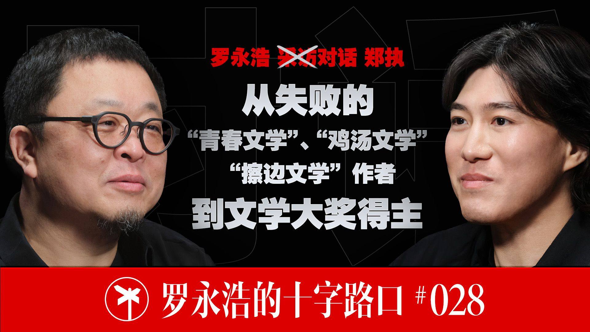

封面来自 B 站 @罗永浩的十字路口 PEOPLE · 罗永浩的十字路口
郑执一个总在赶末班车的手艺人
我老追末班车，但起码，我还赶上了
罗永浩 × 郑执 · 全长 2 小时 40 分
一 他是谁 郑执，1987 年生，沈阳人，作家、编剧、导演。
一句话定位：他是当下中文世界里少数「两栖」都成了的创作者——以小说拿过严肃文学奖，以编剧拿过上海电影节金爵奖，如今又交出一部不像新人手笔的导演处女作。 文学圈把他和双雪涛、班宇并称「东北文艺复兴三杰」；电影圈刚因他自编自导的《森中有林》上映，重新打量他。
但比起这些头衔，有个更贴的标签，是他自己反复提的三个字——赶末班车的人 。
二 他的生平：一条「野路子」 郑执的履历，几乎是「非科班、非天选」的标本。
他出生在沈阳一个平民家庭，父亲开过面馆、后来倒闭赔了钱，母亲是个没走上专业路的业余歌手，他从小由姥姥带到十七八岁。高三那年家里已经拿不出他出国读书的钱，去香港的第一年学费定金，是找干妈借的。
写作是他唯一从小就确信的天分。 19 岁高考前两个月，他不复习了，在课本底下偷写第一本小说——起因不过是失了场恋。这本书后来靠一股生猛劲儿投稿成功、出版，可惜赶上的是青春文学浪潮的尾巴，「末班车没追着，吸着尾气上去的」。
接下来是漫长的「被毒打」。父亲去世那年他休学回家陪母亲，每天念《金刚经》、买菜做饭，晚上写点东西；前三本书越卖越差，到第三本《我只在乎你》，写了两年，版税只拿到九千多块。为了挣钱，他写过鸡汤（两本，没卖好），写过情色小说，在香港的出版社做过编辑（给蔡澜攒过专栏集，做过莫言《红高粱》香港版的责编），去台湾读过戏剧研究生（没读完）。那几年他还背着一笔高利贷，利滚利、被电话催债，「那口气跟早年看港产黑帮片差不多」，最后靠一本小说的版权才还清。
真正的转折是一本叫《生吞》的小说。当时他对自己的销量已经「跌到谷底、对这条路有些怀疑」，索性放下「自我表达」，就想写一个「能把人留住」的故事——结果卖了 20 万册，救了他。紧接着 2018 年，他用三天两夜赶出的一个短篇，在张悦然办的「匿名作家计划」里击败一众成名作家（包括阎连科）拿了首奖，那篇就是后来被顾长卫拍成电影《刺猬》（葛优、王俊凯主演）的《仙症》——他凭这个剧本拿了金爵奖最佳编剧。
到《森中有林》，他第一次自己当导演。
三 他为什么被采访 直接的由头，是新片要上映。 这是一期标准的宣发期对谈，他自己也直言「咱们这访谈的由来，是因为电影要上了」。
但罗永浩看重的不止是新片。在他眼里，郑执是个稀缺样本：小说和电影，两个正在走下坡路的行业，他偏偏在两边都临门赶上、还都做出了东西。 罗永浩自己三四十岁后就几乎不读虚构文学了，是被内容负责人推荐，先读了双雪涛、又读了郑执，才有了这次对谈。说到底，采访他不是为了听电影八卦，而是想搞清楚：一个没踩中任何风口的人，凭什么能在两个退潮的领域同时站住。
四 他代表哪一类人 每个时代都有「天选之子」：踩中风口、被浪潮托着往上走。郑执是反面——他每次入场，都赶在浪潮退去的时候 。
所以他代表的是这样一类人：没背景、没踩中任何风口，只能靠一门手艺，在一个又一个「黄金时代」落幕之后，硬挣一份体面的人。
而这类人，恰恰是今天的大多数。我们这代人里，真吃到时代红利、站上风口的是少数；更多人是在行业增速放缓、机会收窄之后才入场，手里只有自己那点本事。郑执值得你花时间的地方就在这儿——他把「一个没有红利的人，怎么活下去、还活得不卑微」这件事，完完整整演了一遍。
五 他的普通与不普通 先说普通。 郑执身上几乎没有「成功者」的光环感。他出身平民，自称心理素质「极差」，会慌、会焦虑；为写不出书半夜哭过，拍个宣传视频被问到「有没有为哪个人物动情」，当场就哭了；他从小就觉得「有什么东西在背后追着我」，没享受过青春，30 岁就来了第一次中年危机。他也从不装清高——写鸡汤、写情色、接编剧，他大方承认「就是想挣钱」。这些都太像我们普通人了。
再说不普通。 他的特别，不在天赋异禀，而在三样东西：
一是野路子的生存力 。19 岁敢背着稿子闯进出版社、对着编辑「狂捧」自己一个钟头，把脸皮和口才也当成手艺的一部分。
二是对自己的诚实和清醒 。他不装「什么都想得开」——「我绝对不是大大咧咧的人，只是嘴上而已」；他把前些年的窘迫当段子讲，可心里清楚那是真不容易。
三是把每段「不光彩」的经历重新估值的能力 。鸡汤、情色、野路子出身，别人可能想藏，他却说「我很珍惜自己野路子出来的路径，这是我最宝贵的东西」——因为正是在那些「上不了台面」的写作里，他学会了「怎么把人吊住」。
关键在于：他的不普通，恰恰长在他的普通之上。 正因为没资源、被市场反复毒打过，他才被逼出了一套清醒的务实——既不被理想主义绑架，也没被犬儒淹没。
六 访谈里的「金矿」：几个反认知的洞察 这是最该带走的部分。下面几条，都是「过来人才懂、和直觉相反」的东西。
1. 顺，不一定是好事。
郑执第一次投稿、第一本书就出版，一次没被退过稿。可他对这份顺利的态度是警惕：「开头太顺，后边是要反噬的。」——过早的成功最大的风险，是让你误判自己、停掉本该更扎实的打磨；等市场来收账，欠的债一分不少。他后来「两年挣九千块」的低谷，某种意义上就是在还 19 岁那次「太顺」的债。别把运气当本事，得看它是奖励了你的实力，还是掩盖了你的不足。
2. 舍弃，也是创作的一部分。
罗永浩年轻时以为「导演一定对、资方懂个屁」，看多了导演剪辑版才发现：大段砍掉再找回的常很过瘾，但只删 15-20 分钟的，几乎都是删掉那版更好。原因是——你越投入的东西越像「自己的骨肉，哪个都舍不得」，于是对局部取舍最容易误判。当局者迷是有生理基础的；在你最投入的事情上，旁观者的判断往往比你准。
3. 把「输不起」的大事，在心里调轻。
第一次导一个全明星大制作，压力可想而知，郑执的办法是心里告诉自己「这次把拍戏当玩」（嘴上不敢跟资方说）。配合另一条——他凡事「总按最坏结果做准备」（演员受伤、剧组停摆时，他早认了「这片可能拍不完了」）。一手把事看轻、一手把底想到最坏，焦虑反而锁得住。
4. 创作的第一性，是先「把人留住」。
《生吞》救他，靠的是他放下「自我表达」、回到最朴素的初心：「我就想写一个能吸引人的故事，让人觉得好看。」他最早对文学的理解，来自小时候当鬼故事看的爱伦·坡和蒲松龄——「讲一个让人放不下的故事」。很多人做东西先想「我要表达什么、显得我多牛」，却忘了第一步是别让人放下。
5. 「野路子」是资产，不是污点。
这条最值得普通人记住。我们容易为自己「不正规」的经历羞愧——学历不够、出身不好、干过上不了台面的活。郑执的态度恰好相反：他在写鸡汤、写擦边里学会的「吊住读者」的本事，后来全用在了严肃文学里。你走过的每一段弯路、干过的每一样「低级」的活，都可能是别人没有的手艺；关键看你把它当包袱，还是当养分。
6.（罗永浩的判断）AI 会让创作「平权」。
这是访谈里一条对未来的洞察：当 AI 把拍电影的成本指数级降下来，一个「有才华但没资源的年轻人」和一个「功成名就的大导演」，会第一次站到同一条起跑线上——拼的只剩想法。罗永浩管这叫「工具霸权的下放」。不止电影：任何一个曾经「得有资源才能入场」的领域，都值得用这个框架重新想一遍，机会可能正在重新发牌。
最后，回到那个标签——「赶末班车」。 听完会发现，它只说对了一半。一个总在末班车上的人，意味着他从没吃过时代的红利，每一步都得靠手艺硬挣。可也正因如此，当浪潮退去、别人被搁浅在沙滩上，他手里那点真本事，反而成了还能游下去的唯一凭仗。用郑执自己的话说：「我老追末班车，但起码，我还赶上了。」
（解析完 · 原访谈全长 2 小时 40 分，逐字稿与分角色对话稿见同一文件夹）
完整对话 · 全长 2 小时 40 分
开场介绍 罗永浩（开场白）：
欢迎大家收看罗永浩的十字路口，最重要的是一键三连和加关注，还欢迎随时发送弹幕、评论跟我互动。今天我们请到的嘉宾是"东北文艺复兴三杰"之一的青年作家郑执。他是新东北作家群的代表人物，曾凭借小说《仙症》在首届匿名作家计划中击败了一系列著名作家、获得首奖；同时作为编剧，他凭借影片《刺猬》获得了 2024 年金爵奖最佳编剧。现在正值他自编自导的首部长篇作品《森中有林》将在本月全国上映——这是一部发生在东北的犯罪题材电影，于和伟、高圆圆、乔杉、宋小宝、韩庚等全明星阵容，非常好看，我有幸提前看过了，强烈推荐。接下来就是我和这位能写会拍的青年作家、导演郑执的访谈，我们一起聊聊这部电影，以及他的创作和人生。
开场寒暄 罗永浩：
你就怎么舒服怎么来。人家到我这儿的时候，两脚放桌子上都没事，其实不用那么严肃，随便坐。不过要是往后仰太多，就把椅子拽过去。
郑执：
就那个有品牌（赞助）的鞋。好不容易这回有品牌"站住"了，（别）人出来都让我露一下，结果我所有的采访都忘了——我咋没露你那鞋呀。
《森中有林》：不剧透地讲讲故事 罗永浩：
《森中有林》是你第一次执导的电影作品，对吧？也是改编自你同名小说。能不能先给我们的听众，在不剧透的情况下介绍一下这个故事？
郑执：
这个我没经验啊。我们做电影上市前的这种谈话，有时候我会觉得——你这是连电影带原著都看了。我没经验。当然咱们不是现场直播，可以剪后期，但我也不知道怎么在不剧透的情况下，把这个电影还充分聊一下。你应该是有经验的吧？或者你们提前做过训练，面对不同媒体有不同话术？我们在这儿该怎么说？
郑执：
这个故事就是讲了两个家庭。这两个家庭里的男女主角，是曾经相识的旧爱、旧恋人，隔了很多年之后两人又重逢。重逢之后本来要有一段看起来挺好的中年再相逢的故事，可却因此卷入了一桩异常命案，造成了这两个家庭纠葛四十年的一段恩怨。就这么一个故事，只能讲到这儿。
片名《森中有林》的由来 罗永浩：
我一直很好奇。我对电影上市前宣传的那些东西看得不多，以前我看自己感兴趣的电影，上市前的宣传一般不主动去找，都是从社交网络里不小心刷到的——那些其实是扩散破圈的，一般偏八卦。即使是严肃的作品也这样。我还在学习：电影如果连宣传都算上，是一个非常复杂的系统工程。那《森中有林》这个名字，具体指什么？看完了我也不知道为什么叫这么个名字，虽然里边有种树那些事。这名字是怎么来的、怎么个想法？
郑执：
我一开始单纯就是被中文造字的美吸引了。觉得这种会意字，把几个木头放在一起，特别像家庭跟人的关系，是一个意象——你把每个单独的木头当做一个人来看，就会有这种感觉。其实就是这么个想法。然后你套进去之后，有些意味解释不太清楚：这里边还有东西，就像命运里还有命运、家里边还有人，那些主观的、感性的、可以多重解读的东西。
罗永浩：
明白。反正你们搞文学创作的，也不太在乎书名、标题起得会不会影响销量什么的。
郑执：
不不，在乎，在乎。我认为我起得挺好，我觉得我挺擅长起名的。
罗永浩：
那比如你这电影本身有命案、有凶杀，戏剧张力也很强，它不是那种很文艺、完全没有故事情节的片子。为什么不尝试起一个能让大众很感兴趣的名字，甚至恶俗一点都没关系，然后大家进来一看是个好片子？这点我一直很困惑。你有没有注意港台地区——因为商业化比我们早、比我们深入——所有美国电影到港台，都翻译成特别恶俗的名字，记得吗？
罗永浩：
常用的那些词和句式，甚至反反复复用，用到你都觉得……比如一个警匪片，叫什么"猛将""威龙"之类的，你看过几百次，都弄不清哪个是哪个。
郑执：
但是我看过——不是问过，是以前看过——他们有一个做市场宣发的专业从业人员写的一篇文章。他说这个事：无论人民群众怎么嘲笑，我们都是实践证明有效的，所以你随便骂，我们就这么用了。
罗永浩：
就像 007，我当年看都看傻了，叫《铁金刚勇破××》，看过吗？
郑执：
对对对，我知道你说的那一集。007 叫"铁金刚"。
罗永浩：
不是，更早，比杨紫琼更早，是我年轻时候看的，皮尔斯·布鲁斯南那个系列，应该是那个时期。那个名字把我震惊了，我说这也太土了。但后来看了那个香港做影视宣发的人讲，这种始终被证明——简单粗暴。
罗永浩：
就是有效的。所以我有时候会想，尤其我们一个电影到宣发期、是我们邀请嘉宾来的话，我会有点担心：有些电影其实没有那种文艺到脱离大众，其实是雅俗共赏、非常好看的一个电影，可名字起得如果过于文雅或晦涩，会不会影响票房？我会有这样的顾虑。
郑执：
我们肯定更有顾虑。所以这次我还挺意外的：这次资方老板们、宣发方没有决定要改名，从来没提过要改电影名的事，我还挺意外。其实我做好了改名的心理准备，因为这种事我经历很多——比如《仙症》就改叫《刺猬》了。
罗永浩：
就这俩字，摆你面前你都不知道是啥，而且没法跟别人解释。
郑执：
对，没法解释。但《森中有林》好像从老板到宣发的同事再到演员，他们都挺喜欢的。从小说到剧本，我也喜欢。我只是说，因为咱们是到了宣发期聊这个，我就会有这样的想法。我觉得现在大家也在信任、相信观众的审美也在变宽泛。
第一次做导演，为何如此成熟 罗永浩：
你是第一次做导演对吧？但我和（同事）草哥在上海看放映的时候，我们还很吃惊，因为完全不像新人导演做的东西，感觉非常成熟，风格上。你以前没偷偷拍过一些东西吗？
罗永浩：
等于是做编剧的时候，深入剧组的那种编剧。你跟过很多剧组对吧？那也算经验。
罗永浩：
明白。因为高群书导演以前跟我说，很多导演如果在做导演之前已经有了一些名气——因为你小说上早就成名了——为了避免第一、第二部拍得过于幼稚或晦涩，通常在这个圈子里采用的方式是：去拍一些特别小成本的，然后不署自己的名字。因为拍这电影之前已经成名了，有这个心理负担，怕拍得幼稚。
罗永浩：
就练手。万一是练手……他提到，我没核实过，但他说，有的导演拍那个"处女作"（现在不让说处女作了）的时候，其实之前已经拍过不止一个小成本电影，署的是别人名字，在当年电影频道那种地方放掉了，成本基本能收回来。然后大家看他拍第一个商业片时觉得：这个人第一次做导演手法就很成熟。但高群书说，他其实已经拍过不止一个了。这是做导演之前已成名的人常见的操作手法。
罗永浩：
反正我看的时候，感觉就不像新人导演，很成熟，可能跟你跟过很多剧组有关系。
从小说家到编剧再到导演 罗永浩：
能不能跟我们分享一下，你是怎么从一个小说家，一步步成为导演的？因为虽然小说家成名了，但你这制作成本也不低，至少看演员阵容肯定成本不低。这是怎么走到导演这步来的？还有，一般做编剧的，很多作品被改编成影视，那个过程里很难保证编剧跟导演想法一样，所以写原创剧本或小说原著的人，创作理念不可能跟导演完全一样，憋到某个程度想冲上去做导演，从人性上也很好理解。你能不能讲讲整个过程？
郑执：
我觉得您刚才说的心态，我占一半。我写小说很早就出道了，19 岁写了第一本小说，后来觉得能吃这碗饭，写了几年；写了几年之后越写越穷，那时候就面临进入社会、养活不了自己。
罗永浩：
一开始是不是出版商想把你包装成那种青春偶像文学？那时候还流行少年作家。
郑执：
对，那时候还流行少年作家，而我那"末班车"没搭上。
郑执：
没搭上。不过最开始是大社嘛，是作家出版社，第一本是作家社。总之前两三本书，觉得自己能吃这碗饭。后来到了二十六七岁，大概是 2013、2014 年，电影行业突然很多钱，是那个行业爆棚的阶段，开始有人买版权、买这些小东西的版权。我那时候也跟风、也希望卖了挣点钱。挣完钱之后，人家说正好找编剧，我说那我也能来，虽然我不是科班，可以试试，就想多挣点钱。刚开始写剧本就是想多挣点钱。
郑执：
然后写着写着，发现自己确实挺爱拍电影这个事。因为上学的时候本来想学导演系，但知道学不起——它在香港，学费比别的系贵一点，因为自己每年要掏钱拍片，掏不起那个钱，所以就（改成）一直写剧本。从头到尾算下来也小十年。然后就像您说的，到后来那个阶段有点表达欲，因为你要反反复复遭遇那种"心理摧残"。
郑执：
也不叫心理（创伤）。我觉得还是自我意志变强了。虽然有些剧本大多数我都当个活干，但到一定程度，你还是觉得：我嫌跟人沟通累，这个事挺累的，你始终要反复给别人讲你是怎么想的。
罗永浩：
我们以前了解的常见情况有两种。第一种是：小说作家对影视改编是欢迎的，反正多份收入、多一些影响力，但他对影视本身不感兴趣，这种就不容易心里不舒服，授权给你、你们随便拍我也不看，这种很舒服，可以多年愉快合作。还有一种是职业编剧，他不是小说家转行的，从第一天就知道画面权是在导演手里的，所以也能相对心平气和。但你这种小说家，原来有自己的表达，又喜欢影视、又参与了半天，最后又发现是导演说了算，就很容易（不舒服）。所以我们理解你走到这一步，本身是合情合理，也是好事——对你个人身心健康都是好事。
为什么连短片都没拍，制片方却放心交大制作 罗永浩：
那为什么连短片都没拍过呢？制片方也这么放心吗？因为你第一步就是个大制作。
郑执：
它是这样的。整个过程其实是——写到《森中有林》的时候，我当时在业内就所谓"放话"，我说这是我写的最后一个剧本了，我再也不写剧本，我要回头（写小说）。因为我前几年写小说成绩还行，逐渐能养活自己了，还不错。所以写剧本那段经历前些年给我造成的——也不叫写作创伤，就是"皮了"，特皮。你觉得我一两年、两三年写一个剧本，这两三年我能写本不错的小说了，一样能挣钱，而且更愉快，还能完成自己在文学上那点追求。但我这人是答应人一个活就一定交活的人，无论隔了几年。所以《森中有林》是我最后一个"库存"。
罗永浩：
就是版权卖给别人了，也答应了几页剧本，但还没拍。
郑执：
所以我说我把这个写完，就不要再有人来问我改编剧本的事了。而且我很奇怪，我其实也就写这么几个剧本，剧加电影，都是改编我自己的东西，所以我不算个职业编剧。
罗永浩：
捆绑销售、衍生产品。然后你在编剧上被人认识之后，就等于给自己挖了个坑，后来有人再来买小说，就说你打包自己写剧本，你要不写就不买了。
郑执：
就变成（这样）。我也希望那种：别人买走了，你别找我了，你们随便改。因为以前对某些作品说实话也没有那么珍惜的态度，我整个写作之路也挺复杂的，前一段对文学其实没有……敢说对文学有那么明确的认知和追求，是 30 岁以后的事。
郑执：
到了《森中有林》，写着写着剧本，当时也赶上疫情那时候，写写停停、停停写写，经历了两年多。这两年多过程当中，老板、监制这些人讨论选导演——人家提一个我否一个、提一个我否一个，我都觉得不合适。
罗永浩：
人家转回头说"真是，那你瞅谁你都瞅不上"。你是不是觉得你对这个剧本还是挺有掌控欲的？那你自己咋不来呢？
郑执：
确实是在这么半推半就的情况下。我一开始一拒绝……
郑执：
对，我一拒绝。我是觉得我没做好这个准备，没往那方面想，本来想撂下这个剧本之后好好回去写几年小说。然后他们说你也不着急、你想想、不着急回复，结果我就拖了一年才给确定答复，我说那我就自己来吧。
罗永浩：
我觉得这个决策做得非常好，因为我们看电影的时候，就感觉第一次拍的真的非常好。
罗永浩：
对，我有那种社恐（？），但这个不是（客套），真的感觉特别好。完全不像新人导演的东西。还有就是，很多小说家最后也去参与拍电影，这种例子很常见，但能把小说语言和电影语言都掌控好的人其实并不多；也有一些电影导演后来写过小说，两种语言都能掌控好的，其实并不常见。所以我觉得特别好。
第一次做导演，最操心的工作 罗永浩：
第一次做导演，我相信很多听众会感兴趣。一般大家在公共平台上看到一个导演出来讲作品，多数情况下，如果作品足够好，通常已经是有经验的导演了（当然也有新人导演出来聊的例子）。我自己也挺感兴趣，因为我年轻时在电影学院上过一年进修班。
罗永浩：
后来觉得自己天分不行就放弃了。第一次做导演，有哪些比你想的复杂得多、操心得多的工作？比如选角、班子的搭建——因为你没有固定班底，干了好几年的导演都有非常固定、长期合作的班底——这整个过程里的困难，或者好玩的，跟我们简单分享一下。
郑执：
要说困难就像吹牛了，我这次确实没觉得在任何方面有特别（大的困难）。
郑执：
我觉得各方面原因，就是班底是我自己找的，每一个人——从摄影指导、美术、造型甚至剪辑——都是我跟老板们提，我说这几个人是我想要的，然后真的就请来了。
罗永浩：
这些都是你原来参与过的那几个电影里的人吗？
郑执：
不是，有一些不是。比如我们摄影指导朴松日朴老师，我是他粉丝，我们很早就认识，我很早就看过他的作品，那时候我就觉得这个摄影太突出了、这摄影师太棒了。还有跟他合作剪辑的马修，法国人，老马原来给贾导剪、给刁亦男也剪过。
郑执：
贾樟柯，对。然后我们的美术指导蓝老师，是《平原上的摩西》剧版（的美术）。
罗永浩：
我看了那个剧版，我说这美术真棒。他那个电视剧比电影好多了，电视剧版质感非常好。
郑执：
然后我就说能不能联络一下。很巧，一联系，老蓝也是这个小说的粉丝读者，我俩一拍即合。然后又介绍来了我们造型，一个香港女孩陈子晴。这个主创班底就这么比较顺利地搭建起来。再比如我们导演组和整个制作班底里，一半的人是我以前在别的片子里合作过的。这次我的两个副导演，以前在一个叫《被我弄丢的你》的爱情片里合作过，所以我有种安全感，班子一搭起来就有种熟悉感的安全感。
郑执：
那肯定还是……各种拍摄当中的难处都会经历，第一次拍肯定还是有不少磕磕绊绊的。我觉得不管一个导演，你是第一次拍还是第一百次拍，每次肯定都有新的难处。
罗永浩：
明白。有什么超期、超预算这类的事情发生吗？
郑执：
其实出了个不小的事——演员受伤。这是一个非常意外、谁都没想到的状况。我们的主演于（和伟）老师受伤了。
郑执：
意外，就是骑那个"倒骑驴"（电动三轮）的时候。那个倒骑驴有电瓶，拍一个对冲镜头，他骑那个倒骑驴拧油门，那玩意可快了，而且倒骑驴其实很难控制。
郑执：
但你见过那种——就咱东北那帮人自己装电机，很快。拍一个跟摄影师对冲的镜头，那边踩着平衡车，两人对冲，为了镜头效果，结果在一个微微的、可能 15 度坡的封闭路段，车一下就翻了，他就摔了。
郑执：
没有，但反正是摔了，然后（拍摄）就（受影响），耽误了。我们所有的制作费用、演员档期都签了那么长时间，预定好的杀青日子一定要在那个时候杀青。
郑执：
没有，其实没有。而且我们这片子拍出来，后来我自己都不太敢相信——最后拍出来的完整素材将近四个小时。这片子如果慢着剪、把全剧情放出来，大概是三个半小时多到四个小时。
罗永浩：
这个我也听说了，这个传闻本来还想跟你确认是不是真的。
罗永浩：
那为什么会这么长呢？而且我看比原著多了很多东西。
郑执：
对，其实不光是多了很多，是改动很大，有很大一部分改动——结局和主要人物关系。
罗永浩：
主要是结局。因为我以为到那个点就该结束了，后来又出来那么多。然后又觉得加上后边那么多以后，感觉篇幅稍稍有点不够，有那个感觉。所以原计划是拍三四个小时的电影吗？
罗永浩：
这就是新导演的个人经验问题——你野心很足。你的剧本其实就写了 100 场戏，100 场戏是一个正常两小时电影的容量，可是 100 场每场的容量和故事节奏到底是多少时长，那可不一样，得有个经验问题。
郑执：
所以原本那个剧本，聊开了说，原本的野心其实是想拍一个微型史诗。
罗永浩：
其实我感觉真有个三到四小时版本还挺过瘾，我因为很喜欢，就觉得后边——
郑执：
有一些后半段的剧情，就到海南之后的剧情，那感觉就是篇幅有点不够。其实原本有很多拍时代的东西。比如连家辉（于和伟扮演的角色），他自己事业那条线，他是怎么丢的工作、又怎么把工作找回来，就是当年他下岗那个事，是一个挺有时代背景的（线）。以及他种树那个事，您当年知道吗？
罗永浩：
对，很著名的，在东北很著名。我大概听说过，尤其在辽宁跟内蒙很著名的一个事，是个骗子工程，是一场骗局。
郑执：
对对对，因为小说里写到这是一场骗局——他去种树种了 20 年，发现是一场骗局。
罗永浩：
而且我这有一点很重要：我看这电影之前没看过原著。我看过你别的，讲《仙症》这些看过，这个没看过。然后我还跟同事——我们做内容的负责人草哥——商量，我说他是看过小说的，我说我是先看电影还是先看小说呢？想来想去，我说看了小说以后再看电影，对电影的判断会有偏差，但咱们这访谈的由来是因为电影要上了，所以我说我先看电影、不看小说，然后就看了电影。看完小说以后，感觉很不一样，但我个人更喜欢电影。
罗永浩：
对，所以你等于在原作基础上再创作、超越了它，这是我觉得很值得高兴的事。然后我还是觉得——你们拍的素材真够剪一个四小时（的版本）吗？
郑执：
不是素材粗搭出来就是四个小时，粗搭就是所有情节都摆那。
罗永浩：
所有情节都摆那，就是四个小时。那是不是对你小说的粉丝和影迷来讲，是值得期待——就是说有可能将来出一个三到四小时的版本？
罗永浩：
但我以前看很多欧美电影，即使小成本制作，也是因为制片方或发行方的要求，最后按两小时上了。
罗永浩：
但我觉得还是跟时代、跟行业状况允不允许这个事（有关）。那你素材都有了……
郑执：
素材都有了，但如果你做四个小时，多出来那两小时也要做混音、调色、后期，都是成本，而这个东西又不会投放到院线里再放一轮。
罗永浩：
对。对创作者来讲，其实电影一直以来最讨厌的就是成本太高。
郑执：
后边 AI 时代的话，我觉得对编剧、对导演都是一个很幸福的时代即将到来。
郑执：
当然。因为你有想法的话，后边制作的成本，跟现在是指数级的变化。
罗永浩：
所以我们内部也经常聊，因为我们自己做 AI 软件开发，我们有时谈 AI 对艺术创作的帮助，有时就会聊到电影制作问题。就是说，假设这个技术按现在的发展速度，几年后可能 99% 的实拍都不需要了。
郑执：
我那天已经在后期公司——我们后期公司的老板给我们展示了一下他自己开发的 APP 做出来的效果：用了某两个真演员的脸，完全做一场戏，确实挺超乎想象的程度了，几乎看不出来。
郑执：
按他这个技术进化的速度，可能几年内就真的 90% 多的实拍不需要了。
罗永浩：
所以我打一个比方：你看如果你是莎士比亚，你也就是一摞纸一支笔；你如果是刚学写字的小孩，你也是一摞纸一支笔，其实你们俩的硬件条件是一样的。无非莎士比亚那支笔可能是个名贵的笔——但实际上也不是，他当年（用的）破羽毛笔。电影一直以来，从创作成本和资源上，一个有资源的人和一个没资源的人，是完全零和一百的关系。但如果 AI 技术进步，使得拍电影需要动用的资金、资源这一切都指数级下降，最后就会形成：一个野心勃勃的、没有任何资源的、有才华的"屌丝青年"，和一个资深的、功成名就的导演之间，在这件事上是一个起点。这个事我觉得可能三到五年就能实现。
郑执：
这样的话，其实对有想法的人——主要就是编剧和导演——就拼想法了。
罗永浩：
要不然的话，你看很多艺术才华有限的人在电影圈混得很好，是因为他擅长别的东西，作品永远是及格，但他能一部接一部拍；而那些真正牛的呢，可能一个电影就给他搞得跟资方甚至决裂什么的，艺术家这种事挺常见。
【广告】 想要聊得好，咖啡不能少。感谢合作伙伴瑞幸，把瑞幸咖啡店开在了罗永浩的十字路口。
全明星阵容是怎么选角的 罗永浩：
那演员这块呢？因为你作为一个新人导演，第一部电影阵容很豪华了——于和伟老师、高圆圆老师，然后张天爱、韩庚、乔杉、宋小宝、孙悦，都是明星，明星就一堆。我甚至觉得这里边好像镜头多一点的就没有完全的新人，除非特别配角，几乎没有，基本是全明星阵容。你是怎么选角的？他们都是你本来的第一人选吗？这个过程给我们说说，其实观众更喜欢听明星相关的。
郑执：
选角是个玄学。以前我做编剧，因为改编自己的小说，所以导演和资方还是会问你的意见，说"郑老师你有没有什么想法，你觉得脑子里最贴合的脸"。经历过，但自己选的时候，你才明白这个玄学的点在哪。有的可以具体说，比如于和伟，于老师是我从脑子里冒出他的脸之后，就再没想过别人。我等他等了一年多，各种原因，他本身也忙，一开始剧本都没时间看，后来看完之后有一点问题，但我俩要见面碰、聊，都得隔个两三个月。我俩磕了三次剧本，我记得是三次，每次聊十二个小时那种聊。这是于老师的一个方式。
郑执：
高圆圆呢，是我一开始脑子就掉进一个逻辑陷阱——我不知道为什么，我就觉得既然是我自己选，我这次就追求一个：我一定要全班底东北籍。
郑执：
不是嘛。所以一开始我就想东北籍的、这个年龄段的、能驾驭这个角色的女演员，也想了很多、也聊过碰过一些，要么时间不合适，要么人家对这个故事不感兴趣，各种原因都不合适。几乎是开机前一个月了，我这女主角都没定下来。然后老板有天突然提，说高圆圆。我第一反应是：他也不是东北人。（老板）说你一定要东北人？你再想想。后来我重新翻自己的小说，才发现——王秀逸那个角色，我没有写她的来历，她生活在沈阳，但没写这个女性的来历，她在小说里的笔墨其实跟电影中差很多，她也是一个没有前史的人。所以哪怕你说某种"洁癖"，这也解释得通。
郑执：
然后就约（见面），说圆圆看了小说、也看了剧本很喜欢，但他也忐忑这一点，说我不是东北人，你真要把我扔到那个环境下，跟一帮东北籍演员演一个发生在沈阳的故事，他有点不确信。我说你只要跟老板说，约我跟他见一面，我当面跟他聊——我说我可以为你改。所以他在电影里被特意交代：她是一个二十岁跟着一个沈阳男人来到沈阳、然后扎根在沈阳（的人）。
郑执：
对，北京过去的，就是为他改的。所以这所有演员里，只有他跟夏之光演的母子这一对，不是沈阳人、不是东北人，而我就是在戏里专门为他俩改的。
罗永浩：
明白。这个对作品丝毫没有影响，但也避免了他要在临开机前再去准备把自己的东北口音、表演往那儿弄。
郑执：
对对对。然后圆圆拍着拍着，台词演到中间，自然就会冒一点东北味，他说"导演我看那句是不是有东北味了"，我说你看，这就是一个北京人来到东北生活了十几年之后（的状态）。
罗永浩：
对，就被带拐了那个感觉。东北化的"病毒"传染性极强。
郑执：
然后再比如韩庚——我都忘了他是东北人了。比如韩庚跟张天爱，我很久忘了他俩是东北人。
郑执：
他俩都是东北人，都是黑龙江。韩庚也是看了剧本很喜欢，有人提到这个脸了，我觉得合适，然后我俩见一面，关于剧本一个字没聊过就定了。每个演员不一样。乔杉就更简单，我俩是很多年前认识的演员朋友，他平时看我的小说，还是这个小说的读者，挺有意思。后来大概三四年前，他得知传闻说我可能要自己当导演，就跟我说"弟弟你要是真自己当导演了，我来帮你"，他留了这么句话。我那天就兑现去了，我说那你来帮我，他说演啥，我说你让我想想——这个角色是后塞给他的。
罗永浩：
说实话，乔杉那个是我看电影的时候一个比较大的惊喜。我可能乔杉的东西看得不全，但零星看过《缝纫机乐队》那些，还有他喜剧上的成功，所以我完全不知道（他能演正剧），没看过他演的正剧。但他这个正剧演得太好了，我看到那个镜头第一反应是想笑，我说怎么是他，然后瞬间就被抓住、进到剧情里，就没有笑了。
郑执：
我怀疑在电影院他第一个镜头出来，可能还是会笑的。
罗永浩：
但我也相信，即使一开始笑了，瞬间还是被那个角色给说服了。
罗永浩：
对对对。所以我看乔杉这段是比较惊喜的，我不知道他正剧演得这么好。这么多年我看到他所有的，不管是完整的片还是抖音里刷到的片段，都是那种嘻嘻哈哈、搞怪的风格，所以我还挺吃惊的。然后宋小宝也是完全没让人出戏。
郑执：
选宋小宝的逻辑就是乔杉的加强吧，更反差了。他也完全没让人出戏，也是第一个镜头一出"好像是他"，然后再一看，还是瞬间不让你出戏——这就是演员做到了，他没让你出戏，就挺牛的。这两个我都是比较大的意外。然后后边还有个孙悦，演宋小宝的弟媳，就是被杀死的那个人的老婆。
罗永浩：
那个是怎么考虑？我很多年没看到孙悦老师出来了。
郑执：
那个是我们监制、老板提的。这戏拍到最后已经变成——你发现来客串的一个脸都像你说的都是明星了，然后说那还差这一个角色，虽然几句词，我也得找一个。我说我找不着了，我也就认识那么几位演员，你们想吧。然后他们突然就给孙悦打微信，说"月姐，你要不要来演一个东北女人"，我在那边听着他回（消息），就说"好啊"。他来了我才知道，这是他大银幕的第一次亮相。
罗永浩：
是吗？我说你红那么多年，我印象中早年看很多影像他演（过）。
郑执：
对。然后他来了之后，为什么用《祝你平安》这首歌，也是因为他来了，直接就变成个梗了，很自然。
罗永浩：
我不知道你自己和你们同事有没有那个感觉——高圆圆有几个镜头特别像郑钧，就是摇滚歌手郑钧。
罗永浩：
对，他有几个镜头。他们俩年轻的时候各自都不像，现在到中年了以后……以前我在网上就有人说他们俩长得好像有些角度挺像的。
郑执：
这我第一次听说，但我也没在乎，也没有大规模流行。
罗永浩：
但我这次看电影的时候，有几个镜头我就感觉像郑钧的亲妹妹，亲兄妹那种感觉，你们没发现吗？
郑执：
美男子和美女也正常嘛，本来也是帅哥，郑钧年轻时候多帅。
罗永浩：
但他俩年轻的时候分别完全感觉不到像，现在到中年不知道什么原因。有几个镜头，我跟草哥看的时候我就乐，我说你看这个镜头，我还倒回去暂停，我说你看像谁，他在那看半天说眼熟，我说这不跟郑钧一模一样吗。你们剪后期时没有这感觉吗？
罗永浩：
没事，我觉得这是好事，因为他们俩像谁也不会觉得（难看），都是帅哥美女、顶级美貌，而且会多一个话题，我觉得是个很好玩的事。有几个镜头像得我都感觉（恍惚），你可以回去再看一下，好像是那个地板擦血（？）的时候，那个仰角的。
跟明星合作、导演的心理素质 罗永浩：
拍摄过程中，跟这些明星有什么好玩的事吗？还有两个喜剧明星参加，在片场会不会……
郑执：
会，大家气氛很好。但你要说下来，我整体心态——这次其实我把拍戏当玩。我要是拍的过程中这么说，资方估计就疯了，但我安慰自己是这么个心态。
罗永浩：
那还挺难的。你本来心理素质很好吗？因为新人导演第一次，又是投入比较大的、全明星阵容。像我这种心理素质不好的……
罗永浩：
对。我经过多年努力，也就是做到在多数场合（还做不到全部场合）显得不慌，其实我有时候非常慌，包括人家说我最擅长的演讲，演讲我也慌，除非天天演讲。
罗永浩：
那都是逼出来的。我只有一种情况下不慌：就是巡讲的时候。以前去高校巡讲，一周最多三场，这个密度连讲四周一个月，然后就可以做到不慌。
罗永浩：
对，麻了。但如果中间停一个月，再去那场就慌得要命。
罗永浩：
我还行，我心理素质是还行，但我是给自己压力那种，焦虑在自己心里。
罗永浩：
然后到了做事的时候就能控制好。明白。你用乔杉拍这个角色之前，你自己看过乔杉演任何严肃的角色吗？
罗永浩：
那你没担心？你知道很多导演实际上也有这种情况：有些喜剧演员就是喜剧演得好，完了以后他去演正剧，因为角色演绎的说服力不够，让观众不能入戏，大家一直乐，最后对电影作品本身是个损害。没担心这些问题？
郑执：
我觉得一半一半。我有自信是这个人物写得好，对他来说有空间。其次是我相信他，我就是赌，因为我知道他私底下是一个看书的人，看很多小说、有很多理解，他的表演能力绝对不局限于喜剧。然后其实还是有那个考量：就是想在第一次做新导演的时候调皮一下，有那个心态，想贡献一点新的东西，让观众看到——"你怎么会这么用一个演员、怎么会想到请他来演这种角色"，这是让我自己觉得好玩的地方。
罗永浩：
如果乔杉真的没演过正剧的话，这个传播上也是一个好话题，而且他演技确实在这上面非常有说服力。宋小宝也是，其实他演的是一个给弟弟寻仇的、很悲愤的兄长，那么一个角色，但也是完全没有出戏，所以真的非常好。我以为你看过他演的严肃（角色）。然后拍摄期间有什么不愉快的事吗？这种也可以说说，你们有也不想说，也正常。
郑执：
没有，我真的拍戏整个过程，氛围控制得很愉快，大家都很高兴，我觉得这一点还比较（自豪）。当然了，我有时候也会幼稚地相信一些东西，比如几位主演有人会在临近杀青前或杀青的时候跟我说"郑执，这是我拍过最愉快的一次经历"，或者"我觉得是做演员被保护得最好的一次"，然后我是真的相信。但人家有人跟我开发（玩笑说），人家兴许在哪个组都这么说，社恐（社交辞令），不好说。
罗永浩：
但如果多数人在整个制作过程中感觉愉快的话，那基本上是可以相信的。因为电影不愉快的例子特别多，甚至合作多年的，因为电影磕磕绊绊或者一些理念问题（就闹掰）。我自己也见过很多，就是说你拍完了、杀青还能坐在一张桌上吃饭，然后等到宣传期碰面还能高高兴兴的，很少见。
郑执：
确实很少见。我对自己这点挺骄傲的，我自己做导演最看重的是这个，我认为这是导演在艺术创作之外额外的能力。
罗永浩：
你很幸运刚好这块（擅长）。（这点）意见不太同——我认为这是导演能力之一，而且很重要的一部分。
罗永浩：
但我觉得能做到这个的导演应该不是特别多，有肯定有。
郑执：
我觉得跟个性有关。实际上我也不是完全为了别人：如果我在一个工作环境当中有那种剑拔弩张的气氛，或者不舒服的，首先第一个不舒服的是我自己。所以我是围绕我自己为中心营造那么一个气氛。然后我觉得，对一切都能坐下来聊，无论是创作上的还是创作以外的都能坐下来聊。
罗永浩：
这个还挺难得的。因为也可能是坏事传得广，反正我这辈子听说过的剧组的事，即使最后作品非常成功、但拍摄不愉快的故事，远多于拍摄愉快、而且最后作品也很好（的故事）。这非常好。
辣白菜与西塔：一个朝鲜族观众的"崩溃" 罗永浩：
刚才有一点我忘了——这里有一个剧情我看着很懵：高圆圆是一个北京女人，因为各种以前的经历辗转到东北生活，为什么还给她安排了一个做辣白菜的角色呢？我作为一个朝鲜族看得特别崩溃。崩溃的点不是觉得不好，是奇怪：为什么一个北京女人、又不是朝鲜族女人，跑到东北生活，结果还做辣白菜、还卖过辣白菜，很专业。
郑执：
这个好问题。这个聊起来你得问一点具体的，我就想起来了——你一上来问"有什么有趣的事"，让我满脑子搜，想不起来。
罗永浩：
而且你想，我是个朝鲜族，所以我就想：这导演在东北长大，肯定吃过很多朝鲜族做的辣白菜，但怎么会让一个北京女人、又是个汉族女人……
郑执：
有几个细节我一提你就能想起来了。如果您看了小说，小说里提到了：她跟着那个男人来到（东北），那个所谓的前夫——其实两人没结婚——是朝鲜族，小说里明确写了。电影里没提那个男的的身份是朝鲜族，也就是她来到沈阳的朝鲜族聚居区，就是著名的西塔。
郑执：
所以等于是她跟这个男人来了，两人怀孕了也没结婚，这个男的犯事了，出来就跑了——电影里交代了——不负责任，把她扔在了沈阳。也就是说，她有一个朝鲜族婆婆，她从那儿学的这个手艺。
郑执：
对，然后她变成（这样）。为什么只有你觉得奇怪？而且我跟你说，他们俩在那抹辣白菜的时候，那个细节人家是特意学了的，全对。就是那个没讲完——靠什么来养这个儿子呢？她没别的手艺，就等于继承这个，在西塔卖辣白菜。然后如果您再注意一个细节：吕欣开（韩庚演的角色）打蛋（？）第二天早上下楼，有两个目击者，一个大姐一个大姨，他们说的是朝鲜语。那两位演员是我们朴老师的妈妈和姐姐。就是等于我那个市场拍的就是西塔——我不会直接提，但我把那个环境当做西塔来拍，就想要那个氛围。
罗永浩：
他俩前边还说了几句朝鲜语，后边警察来了才说（普通话）。
郑执：
对。然后辣白菜这个具体的点在于：我们在剧本中期的时候，王秀逸还没有做辣白菜这个细节。那时候我们天天主创在一起开会，朴老师每天就说"我妈新做的一批辣白菜，过两天给大家拿来吃"，我说我们都开了好几次会了，我也没吃着。然后他就一直提，我总感觉这个女人应该身上沾点什么色彩、应该干点什么、有点细节，我就哪天突然说：你天天提辣白菜辣白菜，那如果我让她做辣白菜、把她的主色定为红色——就这么来的。
郑执：
创作就这样，融合了很多东西，结果那些就都顺了。比如她抹辣白菜的时候，那个氛围是比较阴郁的，辣白菜里面是有隐喻的——她一开（冰箱）门有两只手（？），那些就都顺了。包括我们造型指导给她设计的从年轻到老的衣服主色以红色为主，也跟那个血案有一个阴影的对应。
类型片与文艺片的平衡、AI 与创作平权 罗永浩：
我们看完以后，感觉这个片子既有很成熟的类型片的感觉，也有很严肃的文艺片的感觉。你拍的时候是有意识地把握这个度吗，还是自然凭感觉就是这个结果？
郑执：
从改剧本的过程中就有这个意识。说起来这是个老生常谈的问题，就是平衡嘛。
罗永浩：
对，平衡。有一些有作者意识的导演也好、新导演也好、写作者转型当导演的也好，你毕竟还面临着一个商业诉求和票房压力。
郑执：
当然。你要怎么去平衡这个东西，从一开始脑子里就得有这些。所以我就觉得 AI 对于有想法的、对创作本身更忠于自己表达的那些艺术创作者，是一个特别大的好消息。
郑执：
所以我觉得 AI 如果能把成本降下来，将来一个有资源、一个没资源的两个导演，他们的起点是一条起跑线。
罗永浩：
这个是技术革命带来的，其实就是工具霸权的下放。
郑执：
对对对，平权化嘛，对创作者来讲是特别幸福的一件事。当然如果你在那个时代也想做得很豪华、比别人成本高，那也可以，但也比今天是指数级地下降。我不知道你有没有在抖音里刷到过那些——有一些人虽然只是做了一些很酷的片段，但那个影像方面真的是天才。
郑执：
而且他还不是专业的影视工作者，就一个业余爱好者，做出来那个画面你觉得是个天才。
罗永浩：
还有那些复刻武打片的，非常复杂的分镜头，自己在农村拍一段，特别厉害。
郑执：
对，完全不比成龙、李连杰他们拍的差。可是以前你要拍这个，首先就没有几个这样的演员，有的话成本你也受不了。
罗永浩：
这个是我刚才特别遗憾的——就是三四个小时（的版本），那个后期成本也很高。
郑执：
对啊，有特效、调色，你还要做演员（合成），（我）想简单了。
罗永浩：
想简单了。我们当时看完，就听到传闻说素材是够剪三四个小时的，后边因为院线需求、正常商业片的需求（剪短了）。
郑执：
其实这个片在后期剪辑的时候，最大的困难就是怎么舍，最后留下这两个小时不到，这个做了很久。从四个小时剪到两个半的时候，挺快挺顺利的；从两个半开始往下剪，就太难了。
罗永浩：
但像两小时变成两个半小时的话，这个就会引发商业上一大堆后续的灾难是吧，各种难处理。首先你拍片就不可能（被允许），就吃大亏了：你握着这样的资源拍了这样一个样貌的电影，是不太容易（被市场接受的）。你做导演应该有这个意识——是不太可能得到资方或市场的允许，让你有这么一个（超长的）电影。
罗永浩：
这还是院线（带来）的一个很大的问题。如果将来大家都不去电影院看，遗憾是——那个东西真的有一些只有在电影院大屏幕上看才能正确还原，小屏幕上看就完全不对了。从这意义上，我上院线的时候一定要去电影院再看一下。
郑执：
过两天就有点映了，4 月 25、26 号就能看。
罗永浩：
那我们上海去看。第一次上一般是那种午夜场？
罗永浩：
反正我得在上海看一遍。因为我跟草哥看的时候，我们俩有个感受——我们俩算是资深影迷，乐片量（观影量）比较大——就有一些场景，那种压迫感的东西，无论是戏剧冲突还是画面呈现，就感觉这段不应该在小屏幕上看，经常有这种感觉。
郑执：
还包括一些声音设计和音乐，那个如果低频没了，感觉就不对了。
罗永浩：
但说回刚才，一方面我会觉得电影艺术还是得去电影院看，要不然很多东西就损失掉了；首先它得是艺术，有些电影我觉得确实没啥区别。
海南受伤停摆：黎母山的萤火虫 罗永浩：
然后从这电影的筹备到拍摄到后期剪辑，刚才你说整个拍摄过程很愉快，那你前期编剧筹备、后期剪辑这些时期，也都很顺利吗？还是有一些很痛苦的事？
郑执：
没有。就刚才说的最大的拍摄意外。当时那个意外发生的时候，那一刻人都凉了，整个剧组。你脑子里没有想（别的），（先想）人没事吧，赶紧大家跑过去看，好，人没事，但是我们需要面临这个状况。然后接下来，安静下来之后，于（和伟）愿意回来了。大家——我总是按最差做一系列准备的那种，我说那就是这次运气差点，估计不太可能（继续了），就做好这批戏就别拍了、拍不了了这么个准备。
郑执：
结果于老师是个（仗义的）人，他受伤之后还给我发微信，说"兄弟别急，等等我，我恢复一下，我争取早日归来"。那咱就全剧组跟他趴着等，就都趴在沈阳。
郑执：
干等着。等了（不知道）干嘛呢，就不知道。然后我们制片人、统筹算了一下时间，说原本我们最后一部分不是要去海南拍吗，原本计划应该是沈阳拍完，大部队提前两天到海南赴景、把所有东西准备好，然后演员调整完飞到海南拍最后一部分。就等于现在说，那我们先派小分队、十几个人主创先飞海南看看去吧，我们要拍那个——假设主演还能回来、假设我们还能顺利继续（的话）。
郑执：
我们先去看看去吧。我们就这么坐七八个小时飞机，到了之后下了车，三亚当地地界，一个本地小伙，嚼着槟榔、操着本地口音、抽着烟，开一个自己改的红色"死亡（电动车）"，蚊蚊的那种、里边放着群（音乐）脑袋疼那种，载着我、我们朴老师（摄影）、美术老蓝、我们仨男的坐着小车，一路睡了三四个小时，发现直接开到了琼中县。我们最后那场民宿的戏，就是所谓"大决斗"那场戏，在琼中县的黎母山里。
罗永浩：
然后黎母山是黎族的母亲山？它是一个自然保护区？
郑执：
对，叫黎母山。然后我们开到黎母山山脚下的时候，已经是晚上十点十一点了。我们想直接开上山顶，住在那民宿里看景，顺便讨论、修整。开进一个岗亭的时候——到一个位置有岗亭了，因为它是自然保护区，你必须得登记——开车那小伙说"三位老师，你仨哥在这等着，我进去登记去"，他叼根烟就进去了。我仨说坐车屁股都坐硬了，下来溜达溜达吧。就伸手不见五指那种山，特黑，我们仨就站路边，仨老爷们站路边。黑得——你看那一人多高的、不知道是什么草什么植物里，就有那个星星点点的萤火虫亮起来了。我先看着的，我说"你看萤火虫，老朴"，老朴说"我长这么大、四十多岁没见过萤火虫"，我说我不相信，你怎么可能没见过萤火虫。然后蓝老师就掏出手机说"你没见，我们拍一下"。就我们仨人在那——三个老爷们前路很迷茫，不知道该往哪去、接下来戏还能不能拍那个状态，就在那看了可能小十分钟。萤火虫在黑黑的大山里，那一刻是整个拍戏给我印象最深的一个画面，反而是跟拍戏没关——是因为没戏可拍、不知道怎么办。我们即使上山看了、看完下来了，也不知道还能不能复工。
罗永浩：
这个听着还挺可惜的。你知道很多电影——也不是很多——有些电影会有一个纪录片，导演组跟拍这个制作过程。
郑执：
当时我自己掏手机也把这段拍下来了。我杀青那一天，在朋友圈发了这个视频。
【广告】 人生可以有很多选择，咖啡我劝你就别选了，喝瑞幸就对了，感谢瑞幸咖啡支持。聊天需要等待，等待渐入佳境，等待灵光一闪；喝酒就别等了，歪马送酒，想喝就有。
剪辑的取舍与"导演剪辑版" 罗永浩：
然后剪辑后期的时候，那两个半小时剪到两个小时的时候，没有很痛苦吗？可能就挺难决策的。
郑执：
对，是难决策的那种，但它就是创作的一部分，每个人都面临这种。
罗永浩：
虽然我对那些我喜欢的电影，特别喜欢看导演剪辑版，但导演剪辑版也分两种：有一些是大刀阔斧砍了——是因为商业上的平衡没办法——但后期他把那些大量的又剪回来，这种有一些我印象里是很过瘾的；但也有那种，这个电影真的就剪了两个小时二十分钟，然后制片方认为必须保两个小时，他就很痛苦地又剪了 20 分钟，然后很生气，最后发行光碟的时候把那 20 分钟的完整版也发出来了。这种我也看过很多。那种大刀阔斧砍掉、找回来值得看的很多；但像两小时 20 分钟变成两小时的，我这辈子的印象里，好像都是两小时的更好。前两年有一个美剧叫《制片厂》，你看过吗？
罗永浩：
我强烈推荐你，叫《制片厂》，还有一个翻译叫《制片风云》，讲的就是好莱坞这些事。它其实是一个轻喜剧的外壳，每集半个多小时，可能也就八集，非常好看，去年还是前年在艾美奖上横扫。其中有一集就讲——朗·霍华德那个大导演来客串，里边很多真的（名人）来——就直接讲了这么个事，把它拍成了一个故事：大导演不舍弃自己的自我表达、那十分钟，跟制片厂干起来了，然后最后大家发现，他自己也承认确实是你们剪的那个版本好。整个把这事给拍出来了。这个是我年轻的时候想学电影的时候很困惑的一个事：我会默认觉得一定是导演对的，"这邪恶的资方懂个屁"，我老那么想。等到后来看了大量导演剪辑版以后，就我刚才说的，如果大段大段剪、找回来有很多值得看的；如果是剪个十五二十分钟，通常剪得更对。所以可能导演是自己创作的，像自己的骨肉似的，哪个都舍不得丢，就会有一个误判。
郑执：
对，我觉得还是一个个人意志跟意识的问题。有些大段，人家自己是（导演自己）指导（剪的）。比如舍弃、砍戏，这是剪辑工作的——剪辑在干什么？就是在做这一部分。舍弃也是创作的一部分，你留下什么、舍弃什么，这本身就是创作的选择。
郑执：
有一些（是）个性、各种原因，确实各种原因。我也有制片人朋友，跟他们做对谈的时候，上来就一句"我们资方有原罪"，跟艺术家谈，先说"我们有原罪"。
郑执：
对对对。但其实你能理解：哪些资方到底是出于什么原因——他真的是认为戏这么剪更好看，再跟你聊这个东西；还是出于一些创作以外的东西——是能分辨的。只是说最后大家干起来没法调解的，就是审美上：如果大家审美不同，那这事真没法聊。如果都是出于"我审美上认为这个更好看"，那审美没法达成共识。
《刺猬》：编剧代表作 罗永浩：
然后你那个《仙症》是 24 年改编的电影？
郑执：
24 年上映的，但拍比那早，22 年拍的，顾长卫导的。
郑执：
对。我最后还算了一下，记得全程拍了 94 天。
罗永浩：
那戏蛮奢侈的，拍了 94 天。哪敢想，我拍 36 天，三分之一。
罗永浩：
明白。跟顾导合作的时候怎么样，有很多冲突吗？
罗永浩：
你就是情商高啊。我不是说你情商高导致你撒谎或者社交辞令——
那场"一席"演讲：暴露了创作母题 郑执：
那是很多年前的演讲了，31 岁……19 年，32 岁。
罗永浩：
我还觉得挺可惜的，因为我听完那个就想再找找，我搜了一下（没有了）。
罗永浩：
说实话你可能都暴露了你创作多年来的很多母题的东西。
罗永浩：
你上台是人来疯，会不想暴露这些吗？你看你是哪个类型的创作者。如果我是脱口秀演员，这些东西就是你的，你的创作跟你的素材是不可分的，在台上跟台下是不可分的。可是你作为一个作家，这个其实蛮重要。
郑执：
因为我是觉得，我是从个人经历出发、蛮依赖这个东西的这种作家。一个人一辈子能引发你创作冲动的素材其实就那么点，就那么几个母题。然后你以那种口述的方式当众表露出来，对你以前以后作品的解读、对你职业生涯某种溯源上的（影响），其实不是什么太好的事。当时上台就脑袋一热（讲了）。
郑执：
我下来就后悔。我下来是我太太和我妈安慰我，我才拗过来这个事。因为当时现场很炸，说实话效果极好。我那天特别不好意思，都想跟人道个歉：那天我的限定时长应该是讲 30 多分钟，结果我好像在台上讲了快一个小时，人家最后剪出来还 40 几分钟，时间更长。我是上台 Live 那种人。
郑执：
在台上说了一些（段子），他们剪掉一些，我为了要现场反应（说的）。然后上台是因为，可能太久没有公开露面跟人交流。
罗永浩：
就是你答应上这个台，是有那个冲动的，是想让人认识一下自己，面对大众重新证明一下自己，然后真是掏心窝子讲。我就觉得你既然上台了，就别整社交辞令、别整水词、别整那些浮的悬的。对，你一点也没（藏）。但是有两个点我是差点哭的，就是那个大姐——她那个话，当然你最后用文学化的（处理）把它破掉了，但那个段特别动人，完全没删，你就不知不觉间……
郑执：
但我不知道你有没有留意，其实那个视频我后来自己看的时候，发现我在最后一句话是有哭腔的。
罗永浩：
说到你父亲的时候。是是是，前半还都是云淡风轻的。所以即使当时那天观众感受那么好——你作为一个幕后工作者、一个作家，很少面临那样多（人的）台子、及时收到观众反馈的那种场合，通常都是通过作品，多少年这么一次场合。
郑执：
然后当时是很幸运。你看我上台，我把它当做一场表演、一场演讲，我就很成功。可是下台那一刻，心里有个特别难受的点：我为什么要站在这么个场合暴露这么多自己？我是不是那一刻被那个倾诉欲和虚荣心给占据了？然后你下来之后想：这些事都讲了，对我是个好事吗？就那一刻很（难受）。我后来就追溯，怎么我母亲是怎么劝我的——因为我母亲在台下，那是在厦门录的。因为我父亲当时走的那年走得很急，所以我始终觉得，我从儿子的角度、对我母亲——对失去丈夫的我母亲，和我自己失去的父亲——没有过一个特别正式的告别。所以那一场我上台之后，迅速地就找，因为我妈在最好的位置坐在中间，我迅速在聚光灯下就找到我母亲在那了，那一刻 1000 多人的场子，我上台告诉自己：我这一场我的情绪，就当给我母亲一个人讲的。所以才那么坦诚讲完了。然后下来就觉得我是不是有点太坦诚，下来就有点后悔这个。
罗永浩：
没有，真的特别好。但你说那个角度我没想过——如果把一个作者可能长期创作的一些母题的东西直白地献出去了，对后期的创作和作品解读（有影响），这个角度我没想过。
郑执：
作家的"贞洁"自己可能给伤害了，我确实有这个犹豫。
罗永浩：
除去这个之外，我觉得那真是一个完美的演讲，非常好。毫不刻意、毫不煽情，但所有的东西都有，非常非常好。然后你可以说你在台上是个人来疯，那种台上人来疯的话，其实对你们路演有好处。
郑执：
是，因为有一些导演做路演特别痛苦，如果是人来疯的性格就会很愉快。
罗永浩：
我是说如果你没有这种计划、然后对片子有帮助、对票房有帮助——
郑执：
我是会极力配合的那种。但路演也有路演的痛苦。
罗永浩：
你听很多社交客套、场面话就站起来（说），咱直说，你是想听到激烈的、明确的表达，激烈表达的那种真实观众。
郑执：
但你确实在这种场子当中，不可避免遇到很多演员的粉丝、狂热的影迷，他其实跟你聊一些电影以外的东西。然后其实痛点是：你一天跑十几个场，每一场被主持人问的都一样，你一句话说一百遍你就恶心了。
罗永浩：
而且你们这个还好一点，用的全是好演员，但不是那种流量明星，所以互动的品质还可以。如果你用了流量明星——当然流量明星里也有好演员——但如果你用了流量明星，那个现场互动就完全失控了。
罗永浩：
就跟作品没关系了，然后搞得导演、编剧、其他主创人员其实都挺尴尬，但你又不能说那个流量明星和他的粉丝有什么错，什么错都没有，就是一个尴尬。
郑执：
我也不能说。我觉得大家都有经验，这种演员其实都懂，这种场面也经常碰到。
罗永浩：
但我的意思是，如果现场有关注作品本身的人，去了以后到后段环节就会觉得"这是在干啥"，会有这种（感受）。这都是无奈的事。
编剧跟组、从"当玩"到看重《刺猬》 罗永浩：
你之前跟过（几个）剧组的时候是什么情况？我以前不懂这些——编剧一般跟剧组是常态吗？
郑执：
我听说过有一些编剧是一定要在现场的，因为有些戏边拍边改、剧本都没写完，这种情况非常多。
郑执：
还有一些导演，某些成熟导演，是觉得你交出来一个差不多的本子了，接下来就我改吧，你就走人、该干嘛干嘛去。而且有些职业编剧，其实我知道很多是不爱跟组的——你耽误人挣钱，人跟组这功夫，我这剧本交那了你随便动吧，你需要非要我改的时候我再改，人这功夫可以去写别的剧本，你跟组就干不了别的了。我是当玩，我前期的心态是纯当玩。
罗永浩：
你也喜欢电影，所以觉得跟着（剧组）作业挺有意思。
郑执：
对，我看看怎么拍的、拍怎么样，然后确实有一些是现场需要你动的。但比如说到《刺猬》，那个心态确实又不一样了。《刺猬》是我蛮看重、非常看重的一个作品。
郑执：
对，所以那个我自己要求一定——我说你们要动剧本必须我来弄，下笔一个标点符号都得出自我手。但是我们那个状态，又是每天聊下一天的戏、每天都出飞页（临时修改页），每天都出，那个是我挺享受那次拍摄的，说真的。
罗永浩：
明白。这个我还真的——《刺猬》这个，我一点也没听说。你说这戏当时，那宣发一点都没辐射到你是吧？葛优跟王俊凯都没有辐射到你吗？
罗永浩：
这事我很奇怪。草薇（草哥）你当时知道吗？我知道。因为葛优现在很少演戏了，如果 24 年演了一个戏，我应该是知道的，所以这事还挺奇怪的。但我想补一下那个课。当时是怎么——顾长卫导演？那好理解了。现在一般应该请不动葛优老师了，他也是半退休状态，挑戏。
罗永浩：
而且可能人家在创作上的成就感、满足感，前半生都已经很充分了，除非有什么特殊原因打动。这很能理解。我还特别想访谈一次葛优老师，但估计他也不会出来。
小说与电影"黄金时代"的感慨、两个"末班车" 罗永浩：
你之前——刚才聊过这个话题了——前面做编剧的时候并没有非要做一个导演，这个刚好一切都对了，然后也就半推半就做了，结果现在看还是很愉快的一件事情。如果票房也好，就圆满了。我觉得它有充足的理由票房好。
罗永浩：
我觉得它一个好票房的元素是完备的——故事、表演、大众接受度的那些剧情处理，还有刚才说的平衡问题，这些都有。我怎么说呢，这就涉及到另一个话题，现在大家经常聊的，当然可能又是我们中年人经常聊的一个话题：就是我有时候看到小说的黄金时代过去之后、出现的优秀的年轻作家的时候，我就有一点——虽然这事跟我没关系——我就有点难过，你理解我意思吗？你看咱们说"东北文艺复兴三杰"你们几位，如果你们跟余华老师……上世纪八九十年代有个叫先锋文学（创作高峰）。
罗永浩：
现在顶级的那些作家、大家公认的优秀作家，其实都是那（一批）出来的，什么苏童、余华、叶兆言、莫言。
罗永浩：
所以我后边——其实我大概三四十岁以后不怎么看虚构类了，我年轻时候是文青只看虚构类，后来就只看非虚构类。然后因为做这个播客工作，我们内容负责人草哥呢，他是文学青年到现在一直看。
郑执：
我插一句，罗老师，我曾经有一度因为你推荐看了一些作家，我不知道你有没有印象。那大概应该是一几年吧，阿乙刚火，《鸟，看见我了》，是不是你（在）牛博（网）推荐的？我当时在香港读书工作，我都得跑到深圳的书城去买书——那时候没有物流。然后我一看说"罗永浩"——你正如日中天最火那时候——"你看罗永浩推荐"，然后带着（看了）。你当年不是推一个什么"中（年）……五虎"，就是冯唐、曹寇，我还记得什么……路内，反正四五个人，都是那个七零后、大概你同龄人。我想到这件事，我还记得那个封面，是因为你推荐我才看的阿乙。
罗永浩：
阿乙我是很荣幸的，这个事我要吹一下牛了。阿乙原来是在《体育画报》工作，再之前他是在老家做警察的。
罗永浩：
然后后来她写那个书——他在网上一直发，写得特别好。当时有一些文化圈的聚会，有一个人说这个小伙子东西写得特好。然后我们吃饭的时候，他就躲在角落里蔫了吧唧低头，在饭局上看书。但是你只要跟他吃过一次饭，就觉得这事很和谐。你第一次看很奇怪：我们一桌人一个圆桌吃饭，他在那看书，这不很奇怪吗，还吃两口放下、在那接着看书，就很奇怪的一个人，但两三次以后就习惯了。然后他们跟我说他东西写得特好，那时候我还在办那个网站。那本是挺惊艳的。
罗永浩：
所以他当时弄了一些东西，我们给发，发完了以后首页做了十四篇还十几篇，几乎就是一个整版全是他写的——是牛博网那时候。然后就推荐了。后来阿乙经常提议说他出道时候有两个贵人，一个是我，另一个好像是人民文学出版社。反正我当时的感受就是你那个推荐帮助很大。
罗永浩：
对，但他后边文学成绩很高，所以我还觉得挺荣幸，没少出去跟人吹牛，也是我当时对文化产业的一个贡献。
罗永浩：
然后说回刚才那个话题：我有时候会觉得，小说的黄金时代过去以后出现的优秀的年轻小说家，这些就会让我——他们可能自己不在乎，但我自己会有点难过——就觉得，一样的水平、一样的能力，如果他早生 20 年，他得到的回报，无论是名利、还是尊重、还是影响力、还是认可，都完全不是今天这个数量级的，我会有这种感慨。然后电影呢——
罗永浩：
是，我心中有大爱。然后那个电影也是。电影我经常一个感慨是：我直到五年前还认为电影是一个特别好的领域，但这几年你也注意到，整个电影一直在——全球性的，好莱坞都不行，都在萎缩、往下走。这个变化呢，我们不展开说了，其实有很复杂的原因，有网络、有技术革命，一大堆原因。但不管怎么样，这件事给我的感觉跟小说很像。你是少有的、在我心里这两个都叠上了的：你在小说黄金时代过去以后，在文坛展露头角；你在电影现在快到尾巴的时候，拍了这么好的一个电影。你要拍了个烂电影，我就觉得行吧，反正电影也完了；但你在这么一个电影走向（衰落的时候）——
郑执：
我插一句，那天有一个大哥，比你年纪还大，跟你说过一样的话，而且他总结了，他说"郑执你老是赶末班车、追末班车"。
罗永浩：
对，这个特别让人揪心。如果你小说和电影很差，那谁也不 care 对吧；但你小说也好、电影也好，就觉得怎么两个末班车都让他赶上了，就会有这种想法。
郑执：
因为现在我们不是——像你就帮我操心宣发的事。电影拍吧，宣发的事，那大哥那天都说了，说"郑执哥早几年你这电影上，我们那时候宣发哪有'预算'俩字，没有预算，多少钱都花"。现在你们就说，而且这个电影的品质也敢花。
郑执：
这事挺有意思。他跟我说，差不多比你还大，60 后。
罗永浩：
对。我们其实到这个年纪有时候，因为都经历过这些，所以就会忍不住去想这些事。然后又会去想说，对有才华的创作者来讲，那下一个黄金时代是什么。
郑执：
然后我有时候也想不明白，就用 AI 做一些深度调研，得到结果还挺让我沮丧的。我用了两三个大模型分析，结果结论差不多，逻辑推导都是差不多的结论：就是现在越来越难出现全民关注的一个艺术形式了，大家兴趣越来越分散。
郑执：
所以他说，经历过那些时代的人，可能就不可避免地看到未来——兴趣爱好、群体受众都是高度分散的。
郑执：
那这件事不能说是坏事，因为它有很多好的地方，但是我们经历过那个时代，就还是心里比较容易被"整个国家去讨论一个文艺作品"这种事情给打动，但这个东西可能未来就很少见，或者就没了。
郑执：
我会经常想这些问题。然后就我刚才跟你说过的，一方面有这种感慨，另一方面又绷着一根弦，老提醒自己"你这是多余的顾虑，他们将来有他们特别快乐的事情，根本不需要担心"。我在这两个中间纠结，可能就是中年心理的一个具体表现。
喜欢的导演：李沧东、侯孝贤、杨德昌 罗永浩：
你自己在学电影、喜欢看电影的过程里，对你影响比较大的、你特别喜欢的导演有哪些？
罗永浩：
李沧东是韩国那个吗？我听很多人提起来，我还没看过他电影。
罗永浩：
就李沧东，50 后怎么会这几年（才……）？李沧东啊，那可是——他以前就很厉害吗？
罗永浩：
我都（没）看过。诶为啥呢，我韩国电影没少看呢。
郑执：
它是文艺片嘛，所以它的宣传上，如果你没有仔细留意的话，应该会错过这些宣传。
罗永浩：
可是我就是研究电影。我印象里我没看过韩国特别文艺的电影，好像都是那种偏主流的，但也不是那么商业的。（这块剪掉。）
郑执：
因为好像提到韩国电影绕不过去的，如果你只提一个名字，韩国电影也是他。
罗永浩：
明白。韩国电影其实我没少看，但是很羞愧，不知道他。李沧东、侯孝贤，然后呢？伯格曼——这都是原来跟着人家电影系，看人家看什么、从什么大师开始看。
郑执：
但都是大师，对不同人群的影响会不一样。然后偏类型一些的、或者个性化一些的我也喜欢，比如科恩兄弟——我喜欢两个科恩兄弟、达内兄弟，还有那个萨弗迪（兄弟）。
郑执：
也挺有意思，他们把类型化变得很个人。他们的电影就是这样，你知道它其实本质上是文艺片，可就是你能看到跟商业片一样的精彩。
郑执：
他这种人呢，又没有委屈了大众观众，然后艺术上想表达的也表达，这个是非常非常难的。
郑执：
不，我是说非常非常难的，从创作者自己来说是难的，非常难能做到这一点。
罗永浩：
而且资方也没意见，可以一部接一部地拍，确实不知道怎么做到的。那你喜欢杨德昌吗？
郑执：
喜欢。杨德昌怎么说呢，就是必修课，一定要看。厉害、牛，就是你看完就知道你要学。但你要说问个人情感，比如杨德昌、侯孝贤，我会倾向喜欢侯孝贤。
郑执：
因为侯孝贤那个人是更感性的，有某种共通的东西你能感受到。
罗永浩：
明白。然后之前好像访谈里提到过，还喜欢那个什么《狮子愈合》（？）。
郑执：
喜欢过一两年，我觉得还行，后来我也觉得它还没那么好。
罗永浩：
对，这个也很有意思，就是年轻时候看过的一些特别经典、当时很震撼的，你回头再看，有一些就索然无味了、完全经不起时间考验；然后也有一些回去看还是吓一跳，怎么跟当年一样好。但你当年是分别不了这两个的，20 年后再回去看。
郑执：
我觉得就是跟你个人生命经验有关，你所积累的阅历和你看待世界的情感浓度，你重新看，并不是因为这个片子变了，而是你变了。
罗永浩：
有没有可能，当时看起来一样好的、现在看起来不行的，一部分是跟我人生经历有关，还有一部分是那个作品其实它的生命力就是没有那么长？
郑执：
不是。我以为我们讨论的标准，首先是已经公认的经典级别。
罗永浩：
你比如说《教父》，牛 X，但你隔了二（十）年说"我没那么喜欢了"，并不影响它还是牛 X，而只是说你现在不爱看这种东西了。
郑执：
但我有一些重新看的时候，不是说已经打动不了——我觉得就是挺差的，当年也没觉得（差）。
罗永浩：
那挺差的，那肯定——每个人心中都有一个"过誉"的名单。
郑执：
而且他出道这么多年只有六部作品，很少，然后部部都是经典。如果只看两部的话，我就推荐他早期的《薄荷糖》，那个是指引了我剧本创作的一个很灵魂的作品。然后再就是他最新的作品、几年前的《燃烧》。
导演上映期"最脆弱的时刻" 罗永浩：
很多导演跟我说一个好玩的事：他们觉得自己是一个内心很强大、也很稳的人，但他说拍过几个电影，每次电影上映的时候是他人生最脆弱的时刻——你知道什么意思吧？他自己对创作是很自信的，但这跟写小说不一样：写小说发完了以后其实没有那么大的压力，但电影因为惊动了这么多人、用了这么多资源、花了这么多钱，过程中可能还找了一些档期不合适的、用人情硬拽过来的，所以他的投入跟小说一个人的创作是没有可比性的。那等到这个片子上的时候，一定要票房好。并不是说我就认钱，但是这个电影上了如果票房不好，等于你作者从艺术价值上有自己的判断，但它毕竟又是个商品——既是艺术作品又是商品——这商品出去以后得不到市场认可的时候，对导演来讲是很难的一件事。所以有一些导演就说，他们作品上映的那个时候是人生最脆弱的时刻，然后听不得一点负面意见，即使明明白白知道那个负面意见是对的也听不进去，他就觉得"等这个从院线播完下来，咱们再聊这个"。你觉得你这个电影即将上、又是你人生第一个执导的作品，你有没有类似的心理问题？现在还是特别淡定？
郑执：
不敢说特别淡定，但还好，我心理压力没那么大。
罗永浩：
你本来就心理素质比较好的，刚才咱也聊过。对，你用什么人、拍什么样的电影、花了多少钱，未来面对这个票房。
郑执：
对，我唯一的心态就是我特别不想给别人造成压力，我是这么个人，所以我希望让资方能赚回成本、票房好一点。然后当然从创作者个体的角度，我肯定希望夸我的多一点、希望得到一些正向评价，但还好，因为我写小说被骂的年头很多，所以这方面心理素质还行。
早期写作：青春文学、鸡汤、甚至情色小说 罗永浩：
你早期就是那种纯青春文学吗？我的感觉，你是从那个叫什么——《仙症》之后的嘛——在那之前就是……
郑执：
我《仙症》之前有两个阶段，我自己分为偏青春小说的阶段，和鸡汤——鸡汤我也写过。
郑执：
是故意的呀，为了好卖、想挣钱。然后那趟车也没追着，鸡汤也没赶上。后来就发现那玩意也是本事——你想把鸡汤写好了、卖成那种百万千万级销量，那也是个本事，就是你发现你来不了、你想来来不了。
罗永浩：
我们 70 后还有一些，为了挣钱去写那个武侠小说什么的，但又觉得丢人，乱用笔名，最后写着写着就发现，这个（虽然）挺瞧不上的，但是要写好了没那么容易。
罗永浩：
还是有分量的严肃文学奖的得主，同时又写过擦边的，你可能是（独）一号了吧。因为有很多作家，自己创作偏严肃、文学性很强，同时也写过一些流行的，这个比较常见；但写过擦边、又得过严肃文学奖的，你可能是独一号了。
郑执：
不是。我印象中，我以前看一些大师早年——可能一两百年前的大师——好像为了养活自己，写小豆腐块（专栏），我一时想不起名字了，但你早年看那些作家履历，是很多人干过这事的。
罗永浩：
这个话题挺有意思，而且还是从人性上能共鸣、共情的东西，挺有意思的。
香港皇冠出版社做编辑：给蔡澜做"豆腐块"专栏 罗永浩：
然后我听说你在那个香港出版社的时候，还帮一些香港著名的专栏作家做编辑、帮他们改语病。有个叫……
郑执：
（蔡澜）我知道，他就是写豆腐块专栏的，属于专栏作家，一周三更可能一篇，一千多字两千字。
罗永浩：
他这人挺有意思，他的文字你是看过——他是受过非常（严格训练的）。
郑执：
甚至我觉得有股私塾味的那种中文，古典中文的训练非常好。
罗永浩：
港台作家很多都是这样，用繁体字这帮作家，有很多都是这样的，在那个年纪。
郑执：
我刚才说"水"的意思是，他们那种专栏因为写得太勤了。我当时负责另一个人，蔡澜，蔡澜是我的作者。我当编辑一年半多一点吧，跟老头接触了一年多，还挺有意思。
郑执：
有趣。这人他也是写专栏，我那时候每周干的工作是什么呢——我每周末去一趟家附近的公共图书馆，把这一周（的报纸）——他那时候在哪个报纸上，我忘了香港哪个报纸——把这一周的报纸借出来，去影印机那儿印出来（他这周写的四篇），回去扫描输入到电脑里，然后攒半年就是一册书，然后我给想个名、想个包装做个封面，就这么（出书）。然后他有一批固定读者，销量永远很稳定，在香港卖得很不错。工作就这么简单。也就是说我那一年多间，至少看过他从 80 年代到那一几年写过的上千篇专栏。你觉得这人很有意思。他说白了，我觉得放今天，他是一个生活态度博主——讲一些饭该怎么吃。甚至放在今天来讲，比如聊女性、聊女人，他那个观念是很老派的。
罗永浩：
对，很老派的。他们年轻的时候都是……（用今天的眼光看）。
郑执：
放在今天来讲就纯纯物化女性的视角写的东西，但他反而会被一些（人接受）。他们甚至敢用"玩女人"这样的字样。
郑执：
然后去年蔡生（蔡澜）去世——是去年还是前年去世？
郑执：
然后我就想起，我在香港那时候的生活状态。那是一个很有意思的阶段，大概是 13 年左右——不准确，13、14 年——我在那个（皇冠）工作。因为那时候我是负责他的编辑，所以我们的交流方式是大概每一个月会吃一顿饭：这个月是我们老板请他，下一个月是他请我们，然后会带上我的上司（出版总监、老板），我作为他的直系编辑，然后他跟他的助理，每次就这么四五个、五六个人吃饭。我每次很期待跟他吃饭，因为那个时候正是兜里没钱的阶段，再加上他是美食家。你懂香港那些有些饭店，你掏钱进去人家都不正眼瞅你，就那种老牌饭店，但是熟客、老客来了就是没座也给你（安排）。只要说蔡澜来了，你提前两分钟跟他说，他也给你安排最好的座。跟他吃饭就说白了有面，你就去享受。而且他会带你去一些你消费不起的小餐厅。
郑执：
就有一次吃避风塘炒蟹，那次我才知道他是新加坡人——他老家是新加坡的，我那次才知道。他说"这是我家乡菜"，然后就去。那个是在兰桂坊一家、一个楼里的，楼几我记不清楚了，那家菜是挺有名的一家店，很贵，对我来说那是很贵了——一只螃蟹七八百，你就算吧，一桌人点四只螃蟹三千块钱。上来之后，我说这玩意平时舍不得吃，我就光吃，你们聊你们的，我吃我的，我年轻二十几岁。他（蔡澜）就动一筷子就放下不吃了。然后旁边有一个经理，那个大堂经理，胖胖的，穿个小马甲、小衬衫，我能明显看那汗从这儿流到这儿，就顶着（压力），半个小时（看出）蔡澜不痛快。然后那哥们过来说"蔡生，还满意吗？"——
郑执：
（经理）马上说"怎么了，是不是有事？"蔡澜说"我觉得你们是不是换厨子了？"那人一下就愣了，说"您真（厉害），差别那么大吗？"蔡澜就说了一通，我也听不懂，就说你这个蟹应该先怎么斩、再怎么腌、再怎么入味，"所以我就不想吃"。他说"蔡生对不起，我就按你说的做，我马上把厨子叫过来，按你说的传达一下，你等我一会、就 20 分钟，我给你重做一盘，这盘扔了、不要，白送"。完了那个（蔡澜）说"我吃饱了，我们该走了，买单"。完就买单走了，就走下楼、下电梯。
郑执：
那个过程当中，我脑子里想的全是——从买单到起身，人家那边后厨已经在打包了，就是说这个（被退的）三千块钱四只螃蟹，已经要（处理掉），人说"我不要了、我走了"。然后我们就下电梯，一路——我们当时吃饭那地方离公司很近，一路往回走，我就怎么走、心里就是那四只螃蟹。然后给蔡澜送上车之后，我们老板跟那个经理（应是同事）往公司走，我说"不好意思，我想上个厕所、我尿急、肚子不舒服"——香港那很难找厕所——我说"我回刚才那店里上"。他说"那你快点啊，别迟到了"。他们就午休时间往公司走，我就返回那个电梯，上到三楼。那电梯门一开，那胖经理就拎着那四盒（螃蟹）在那，他一看着我，眼神就放光，他说"还有没有蔡先生给你发来（的消息）？"我一反应，我说"是，我就是蔡先生叫我回来的"。他说"是不是拿这四只（螃蟹）旁边来了？"我说"对"。然后那天巧，我平时不背包出门，那天是因为给他拿样书——新书出来了送样书——我背了一小书包，那书包里能放十本二十本书，那书给完他了、书包空的。我（把螃蟹）放在里面，他直接给我放好，拉链拉好，鞠躬，我说走了。说"一定不好意思，一定跟蔡生说一说我们（会改进），别写什么、千万别（写差评）"，我说"我懂，放心交给我了哥们"。完了我就下楼。
郑执：
我回去那是午休，下午到六点下班还有好几个钟头。我那一下午坐在——我们那格子间，很小一办公室格子间——那一下午就干一件事：我俩腿夹着那包，我说这味儿别跑出来，魂不守舍，我就夹着夹着，我上厕所——一下午厕所都没舍得上。然后到了六点，啪、掐点打卡下班回家。我在路上就给我室友打电话——那时候我租一个很小的房子三个人合租，我跟我室友关系不错，另一个男孩——我跟他打电话，我说"买啤酒回家等我"。
郑执：
对，说有硬菜。他说"什么玩意"，我说"我拿出来（你就知道）"。咱俩那天晚上我记得可能喝了五六瓶啤酒，把那四只三千块钱的螃蟹吃了。然后从那以后，我再也没吃过这个菜，因为我后来在别的饭店又吃过避风塘（炒蟹），就觉得不好吃了。
罗永浩：
很多食物就是这样的，就以前说乾隆"翡翠白玉汤"，一个意思。后来你跟蔡澜说过这个事吗？
郑执：
没有。我觉得他都不会记得我叫什么名字，因为就是个小孩。
罗永浩：
你说勾起我很多年轻时候穷的回忆，就是这种跟吃相关的。比如以前的人，你知道尤其在东北，又穷又好面嘛，所以比如我爸，如果来个朋友到我们家，我们家就算状况很惨，或者有一点什么东西、留着过节吃的，也会都拿出来摆一桌像样的东西，又来客人了嘛。然后我、我哥我姐，我们这种平时吃不好的，客人来了，第一他们聊天、再加上喝酒也不会吃很多，总是会剩，所以你已经知道客人一走就要吃剩菜了，而且那个剩菜对我们那时候贫穷的生活来讲是很豪华的。然后就等他走。
郑执：
对，就是。但是你小时候有这个吗？应该你们那一代没有了。
罗永浩：
没有，我们条件还行，吃得饱。是，我们那会儿就有这个。然后有的时候讨厌的就是，我爸来这个朋友喝完了话贼多，11 点如果还不走，其实我们就被我妈逼着去睡觉，那个是真睡不着，就合计、耳朵竖起来就听，那边是不是（要走了）。我刚躺下，10 分钟半小时就走了，那是又爬起来再去吃东西；但有的时候（不知不觉）睡着了，还恨睡着了。那边没有动静，就说明（客人）一直还在。
罗永浩：
所以勾起这种回忆了。这个还挺有意思的，你刚才说的时候我觉得画面感很强，而且搞得还挺惊险，还跑回去。
郑执：
对对，真的是。当时整个那个心情……那是我在香港过的最后一年，也是最不好的一年，然后第二年紧接着没多久就辞职走了。
罗永浩：
对，好像我在你其他的访谈里看，你那时候待在（香港）并不开心，越到最后越不开心。
台湾读研、高利贷还债的往事 罗永浩：
还有你还去台湾读过研究生，后来又放弃了，那段是怎么回事？就是离开香港之后。
郑执：
对，离开香港之后，读的戏剧，（去之前先）把债还完了。因为在香港走不了，是因为欠着债也没还。
罗永浩：
对对对，说说你那个高利贷那个事，那个为什么……你不后怕吗？那个时候其实那个要没处理好，可能要祸害你很多年。
郑执：
也不叫祸害，就是你欠钱还钱很正常。但那三四年的状态就是：你先借钱，跟朋友借，借完然后还朋友的，然后透支信用卡，然后再还信用卡，然后最后工作那两年，基本工资一下来，七成先交信用卡了，然后利滚利，最后就到了那么一个数字。
郑执：
其实就是小额贷，但那种就是还不上的话，就会出面催债那种。
罗永浩：
对，我后来知道，是这样。那你被他们催过吗？
郑执：
被打过电话、威胁过，就挺吓人的，那口气就跟早年看港产黑帮电影差不多。
罗永浩：
我以前年轻的时候，也看过一些零星的港台报纸，各种渠道，去广东什么的有时候能看到，上面有一些你感觉就是黑社会干的——报纸上一个小豆腐块广告，"借钱找我"四个大字，然后一个电话号，这吓人，你看这不就黑社会？正规金融机构怎么会这样呢？而且你看他那个语气，就是"你敢不还试试"，"借钱找我"四个大字然后一个电话号码，啥也没有，我当时看很震惊。我就问他们，我说这是放高利贷？就感觉特别横。你那个是当时因为学费的问题，我记得对吧，就是不够钱读书了，本来不想读大学了，后来借来借去，最后就借到高利贷了。
罗永浩：
还挺吓人的。好在最后是靠什么文学奖的奖金，还是小说的版税？
郑执：
靠我人生中的第一笔版权，我第三本小说的版权。
郑执：
那是……12、13 年左右吧。其实现在想想还是有一定风险的，那时候因为年轻。
罗永浩：
回头看好像没那么大事，但当时如果没处理好，可能祸害你个五到十年。
郑执：
后来有一些长辈知道了，也跟我说，是替我后怕。
罗永浩：
所以最后是催债，用打电话的方式威胁，还没有给你上手段？
罗永浩：
门口贴过条吗？就是告诉你"我知道你家住（哪）"。
郑执：
当然知道我家住哪，你借钱的时候身份证都压那了、都签了。
罗永浩：
明白。那台湾那个研究生中途放弃是因为啥，是学业跟想的不一样、没意思是吗？
郑执：
不是，（是要）赶紧挣钱，都二十七了，那时候二十七八了。
三十岁的"中年危机"、从未享受过青春 罗永浩：
你三十岁前有过那种（中年危机）吗？我是有的，我是三十岁就来了第一次中年心理危机。而且以前像我七十年代生（人），我年轻的时候平均年龄也不到今天的八十多岁，六七十岁很多人就去世了，所以大家好像那个年代把三十岁就当成是中年。所以我印象很深，是我二十八九岁的时候就很慌，就觉得马上就三十了、一事无成。
郑执：
我非常理解那心态，我甚至比那更早。我从很小的时候就总觉得有什么东西在追着、赶着我在后边，我也不知道是啥。这么说起来挺伤感的，我感觉我像没享受过青春，我从来没有享受过青春的心态。
罗永浩：
明白。你那个演讲里，自己写那"青春"，想（对）爸爸（说），还跟他写的纯胡编、假装很快乐。
郑执：
对，不是假装很 enjoy，就哪怕你是享受颓废、丧那些，我连那个都没（享受过），就是每天不知道就慌，醒着就慌，就感觉有啥事没干、该干点啥。从 18、9 岁、从高中我就这样，我没（有）、没享受过。
郑执：
（那是）18 年，那是 30 出头，也过 30 了。
罗永浩：
但也算是比较早了，30 岁成名也可以了，当然不是那种少年（成名）的。你（也能）安慰自己——比如我也安慰自己说我老追末班车，那起码我还赶上了。
郑执：
有一些（安慰），我是能安慰自己。但就是你刚才说那心态我特懂，因为很少有跟人聊过这个心态。
东北文学为什么大量用方言 罗永浩：
说到你那个小说——不是说电影，我说小说的时候——我有一个疑问：你们这波，叫什么"东北文艺复兴"这批作家，应该平均是比我小十几岁这波，你们都有一个特点是我一直很疑惑的：就是你们在文字里那么大量地用家乡的土话，这是什么样的一个考虑？就完全不考虑南方读者的感受吗？我先把问题解释清楚。比如你看我们年轻的时候都看过王朔，王朔那个语言其实特别是落到口语上、对白上的，那个东西你就觉得是他文学作品里有机的组成部分，是不能缺的，有一些北京话也有一些是土话，但那些东西是它整个小说的有机构成部分。所以这种对白上的方言话，我是能理解的，因为它有时候带来一些特色、生动性。但我困惑的是，你们这波写东北文学的，即使是描述性的文字也都用大量的东北土话，这个如果改成普通话，会有什么文学价值或艺术上的损失吗？我觉得不会啊。
郑执：
好问题，我没有……你以前想过或聊过这个话题吗？我没有考虑过这个层面。但是就我个人回答这问题，我觉得很简单：它就是风格化的抓手。在那个阶段，是风格化的某种抓手。
郑执：
特别想锚定、寻找自己风格的那个阶段，对，方言这种东西是一个抓手，因为你会看成功作家的例子。说到这，其实我在离开皇冠离职前——你知道我做的最后一个工作、作为编辑出的最后一本书是莫言《红高粱》的香港版，那是他拿完诺奖之后，我们公司把他那个版权（拿）下来了，对，就是繁体版。然后大概半个月前，我第一次加上了莫言老师的微信，因为他组织了一个什么公益活动我们参与了，然后我跟他微信聊，我说这么个趣事：我特别对不起的一点是，那本书很可能是莫言职业生涯中错别字最多的一本书。
郑执：
我是责编。就是我离职前，我的经理还能查出这本书 50 个错别字来，而且他还不确定是全部的，扫一眼能查出一两百个。为什么？就跟你刚才那个问题有关。原因是：我收到这简体的 Word 版，我先用机（器转换）——现在又没有 AI 那么智能，你只用那个 Word 本身的功能简转繁，首先简转繁，啪、很多直接框出来了、乱码出来了，你得一个一个揪。然后你揪、或者再回去找，我看繁体版、我看简体版，我甚至都不知道他那句话是什么意思——我家还山东人呢，我老家是泰安的，我都看不懂。
郑执：
当然了，很多呀，很多土语。就像你说那种山东土语，那都是一些描述性的词。
罗永浩：
我可能是山东作家的（书）没少看，我印象里我看《红高粱》的时候，没有那种障碍。
郑执：
很多。因为我也是因为把他这个（书）翻完了，我意识到这个问题。所以你再去手工改，我这种大大咧咧的、又不是一个好好做的编辑，就很多错别字遗留在里边。我说所以那时候意识到，你看那代成功的作家，他们为什么借用一些（方言）——包括刘震云也好，就是他们在风格中有过那么一个阶段，其实王朔也算某种类型了。所以那个时候——现在咱们不闹社交辞令、敞开（说）两个（观点）：可能你说这个问题是过犹不及，也许用多了，但是那个时候在那个年纪、那个认知情况、那个写作阶段，就选择了那么一个方式，感觉是风格化的一个选项。然后我这次的新书——就是刚才送您这个新的长篇——就反着来了，有意识地几乎里面不会出现（方言），它依然是讲两个出生在沈阳的人的故事，但几乎没有这个方言倾向的东西了。
罗永浩：
我之所以问这个，其实恰恰是因为我是东北人。我看你们的书的时候，包括你的小说里有一些措辞用语，我一看每一个都能看懂，因为我就东北人嘛，但我就会——密度有点多的话，你一页里出现好几次，我就说这南方的读者能看懂吗，我就会有这种困惑。所以我觉得如果这是我写的，我就会很慌。有一些是必要的我能理解，但是有一些描述性的我就觉得（多余）。
郑执：
那你听说过前两年还有一个女作家出来了，叫林棹，她写《潮汐图》。对不起——《潮汐图》，她出了两本书，她用潮汕方言写，可能南方读者看跟（看）我们的小说有类似的感觉。
郑执：
所以这就是一个度的问题、平衡。如果有一些可能有风格化的东西、或生动性的加分，但就咱们刚才说香港那些口字旁怪字，那个除了广东完全全国都看不懂，对吧。
罗永浩：
而且咱们大陆的输入法，有些字根本就打不出来，字库里没有。明白。我只觉得这个问题好玩，问一下，没别的意思。
郑执：
它其实很简单的一个答案，就是急于寻找风格的阶段。
童年：歌手母亲、姥姥带大、气功热 罗永浩：
你小的时候——因为你演讲里讲过你家庭的那个状况——你小时候性格是什么样的？那个时候打小很小就对文艺这些东西感兴趣吗，还是后边因为机缘巧合才走到这（一波）？
郑执：
从小知道 DNA 里文艺细胞不错，因为我母亲是个歌手——业余歌手，没有走上专业赛道。小时候我就是淘，又淘又懂事：惹事的惹事，然后懂事的懂事，然后我总能逃避惩罚，就是惹完了还能避开挨打。
罗永浩：
这个是一个很大的本事。我小时候也淘气，但是哪个打（都没少挨）。我听你那些（故事）我都听过，有点硬核，就是嘴贱各种挨揍。然后你是跟姥姥长大的？
郑执：
也不是。因为我妈是我姥姥的老姑娘（小女儿），所以我姥姥一辈子辛苦，从第一个孩子的孩子，到第二个、第三个、第四个，一直带到我这儿就留下了。那就面临着老人在哪养老呢，我妈跟我姥姥感情又好，那时候（妈）就（让姥姥）留着。然后我姥姥也最喜欢我，等我 16 岁以前，都是跟我姥姥一张床睡觉。家里就那么两个屋，我爸我妈（一间），我爸在外面忙挣钱，我妈管我学习教育这方面的事，但日常生活——我妈原来是衣服不洗、饭不做的，都是我姥姥（做）。所以家庭分工还挺明确。
罗永浩：
我看你以前的访谈里还提过，你姥姥跟着那个沈昌练气功？
郑执：
我不信，我不知道那是干啥呢，但其实老是在（练），我不知道自己在干什么。
罗永浩：
所以你小的时候，比如到青春期以后，经历过——我不知道你们这代人——经历过全民信那些怪力乱神的那个东西的事情。
气功热、迷信与"敬畏不可控力" 罗永浩：
（你们这代）受到过这种东西的影响（吗）？因为那时候市面上全是（气功）。我现在回想都不可思议，因为那时候那些气功（流行）横行的时候，很多受过严谨的理工科训练的大学教授（都信），我现在讲就不可思议，一直弄不明白当时是怎么了，但回想那段还是很有意思。包括你小说里不也有那些怪力乱神的东西吗？所以我就怀疑你们小时候也经历过大规模都信，其实是没有的对吧？
郑执：
对，我觉得不是大规模的。后来我跟我的朋友们聊天，会知道好像是我个人经历在这方面（接触）比较（多），还是因为家里老人的关系——家里七大姑八大姨多、老人多，从小它就是你正常生活逻辑的一部分、一个背景。所谓的迷信，其实是他们家庭生活逻辑的一部分。我经历多了，什么算命、改名，从小我算过多少回命。
郑执：
改过一两次。我怀疑这个改名我后来没用（成）——就是尝试给我改名，我不要。
罗永浩：
咱们国家从法律、户籍制度上，名字特别难改。我怀疑这个是一部分原因，使得那些替别人用算命的方式改名收钱的人生意不好。要允许随便改的话，可能就不知道有多少人信那些骗子去改名。你自己完全没有这些迷信方面的问题吗？你有没有什么信的稀奇古怪的东西？
郑执：
怎么定义迷信呢？说实话，我一直不知道该怎么准确描述。我相信人生以外有不可控力、有不可控元素，怎么去定义它我不懂，持敬畏心吧。但是有些挺邪的，就是我小时候有一些经历。
罗永浩：
比如说如果有人领着你去见一个号称特别神的大师，你会去吗？
郑执：
我小时候去。小时候没有那个反叛，就必须得去，我去过，我妈也拉着我去过。
罗永浩：
这种就不算。你长大以后，自己有被同龄的朋友忽悠的去见过吗？
郑执：
不是被忽悠去见，而是说这人就在饭桌上，然后别人告诉你他是个什么——是个大仙，看名（相）的、看命的。我经历过，然后出于给朋友面子，那你要问一下就问一下，不会真信这些。
郑执：
也不会。就举个最简单例子：我早几年爱骑摩托车，我喜欢摩托车，然后有一次在桌上一个朋友——我也没问他——他就说"你给郑执看一看"，他是研究星座（还是什么我忘了），是中西哪派我都忘了。他看着就说"你注意点交通方面的事"。然后一个朋友说"你看他新提的摩托车，提醒你了"。这个事你要不说吧，他在心里就不是个事；可是你当听到这样的时候，你跨上摩托车，从那以后就老想这个事。后来我就卖了——但后来卖是因为我有孩子了。
郑执：
对。但你就说这个信与不信的界限、这个东西的力量。
郑执：
但是对这种东西还是不可妄论吧，因为我见过——我很小的时候见过。
郑执：
该怎么形容呢，就是生命体以外的东西，在我很幼小的时候。所以可能它根植在我记忆当中，我对这种东西、我是相信有另一个维度的世界或者什么的存在，我相信。
文学启蒙：爱伦·坡与蒲松龄 罗永浩：
然后你在写作的时候，早期对你影响、或者整个写作生涯里对你影响比较大的、或你特别格外喜欢的作家都有哪些？
郑执：
这个说过无数次，就是爱伦·坡。然后如果是中文作家，对我从小影响的就是蒲松龄。小时候这两本书——我识字、能自己看书以后，这是我最早接触的文学作品。
罗永浩：
然后有某个共同处，因为小时候就都当鬼故事看。
郑执：
对对对，他俩正好都当鬼故事看。然后就造成了可能我后期自己写作的审美选择上（的倾向），你会后来慢慢意识到，其实它就是对潜意识已经给你扎根某种影响了，你的文学审美在很初级、很早期的时候就被他们影响了。
罗永浩：
所以你作品里那些现实和那些"怪"的东西之间穿来穿去的那个，是受这个影响。
郑执：
这还是表层的东西。我觉得深层的东西是：我为什么那么爱看他们的作品——它告诉我，文学作品你怎么写也好，但我一定喜欢，我读也好、写也好，要引人入胜。所以我本人就是受不了闷的东西，无论是看还是（写），我受不了闷的东西。
罗永浩：
那对相对严肃的写作者来讲，这个其实是很好的一个品质，但其实这样的人并不多，尤其是写小说，很多人都特别自我，尤其越是严肃创作的越自我。你这个还特别好。哎呀你一说我想起来，我小时候也看到很多那种鬼故事，《聊斋》大家都看嘛，以前还有个什么《阅微草堂笔记》，里边有些鬼故事特别好玩，它那个还更短，然后《太平广记》也很多。
罗永浩：
我完全没有想到你是受爱伦·坡和蒲松龄影响这么多。
郑执：
是，我觉得最本质的、说白了，就是你还不明白"文学"两个字是什么东西的时候，扎根在脑子里的那个概念——就是讲一个让人放不下的故事，这就是我最早对文学的理解。
郑执：
然后后来你才明白，讲故事还能用这种句式、还能用那种结构、还能讲出花来、还能隐喻、还能有那么深刻的哲学意味，那都是后来明白的事了，是后来在原来知识基础上叠加的东西。最初就是一个故事抓人，而且这个是永远的、永不过时的。
19 岁的第一本长篇与赴港求学 罗永浩：
然后你的第一本长篇，就是叫《浮》吧？那个是你说的那个青春文学时期吗？当时是一个什么样的情况？
郑执：
19 岁。高考前开始动的笔，大一那个学期写完了。
郑执：
高考前复习阶段、冲刺阶段我就放弃了，我就不想考了——不是不想，就不想好好弄、就这个水平了。还有俩月高考，我就开始写了个开头乱写。
罗永浩：
所以你后来是国内的成绩不行，后来接了香港的（offer），因为中英文的关系是吧？
郑执：
不是。我那个学校是辽宁省最好的高中之一，我在一个重点的文科班。我那文科班一共就二十二三个人，那一年高考平均分，我们班 609，全班平均分 609。那是啥概念？就是那年 630 上北大，我们 609 平均分。
郑执：
辽宁省第一班，当年我们的平均分全辽宁省文科班里最高的。然后我 550，我倒第一，但我也过一本线了，我记得过了一本线 12 分。然后你只要过了一本线，就可以申报。那时候香港来大陆招生，已经是第二年还是第三年，但那时候往那个方向去的人不多。比如当时很多人，如果你能考上北大、这边给你个港大，大多数人还是会去北大的。
郑执：
然后我那时候很感谢我的老师，一个地理老师，他对我很好。他了解我们，大家相处几年，他说"郑执你这个性格，你在大陆随便去个学校你也就那样，你不如走出去看看"。因为我语言天赋还不错，语文和英语好，他说你看这个适合你，因为它那个面试——你只要过了一本线就可以去面试，而面试占的成绩，我没记错的话，就是你综合成绩的一半，它决定录不录取。
罗永浩：
这才（管用），复古（？）。后来做导演去见资方也有好处，见演员什么。
郑执：
是。我确实有那个自信，就是我觉得我只要见到对方，我大概能说懂他，跟演员之间不论经过多长的过程。然后我抱着这心态就很轻松。
罗永浩：
这个不创业开公司太浪费了，见投资人都是面霸的话就特别厉害。
郑执：
然后我对，就来（面试）了。我还记得来——是来面试，好像是在北京还是在上海，我有点记不住了，反正总之就是跟香港来的三个老师全英文面试，一开始跟你聊几句中文，然后又开始聊英文，然后走出来之后我就知道他们肯定是喜欢我的，至于能不能过那坎让我进就不知道。然后我就进了。考上之后，那时候确实多少是想走出去的心，加上有点爱面子，就（决定）去了。因为当时我家已经钱不多了——我爸曾经开面馆挣过钱，好多年前，我小时候挺优渥的生活。在那么一个大时代——说实话班里好多同学父母都下岗了，我那时候都不知道，我爸等于是主动下岗，但做小买卖挣着钱了，没缺我吃没缺我穿，甚至吃好穿好的，我都很满足。然后到了我高中后期阶段，我家已经——我爸饭馆倒闭了，家里经历一些事赔了好多钱，其实已经拿不出我第一年出去的学费。但我还是坚持，我说我想去香港。这个事我妈对我挺支持的，就是说动我爸。但最后我去香港第一年学费的定金，还是找我干妈借的。
罗永浩：
那个时候去香港读书的话，比在国内读大学成本要高很多吗？
郑执：
我去那个年代，港币跟人民币基本是一比一的阶段，然后生活费加学费一年下来，正常花、你不是大手大脚的话，十万港币一年，四年四十万。
罗永浩：
比那便宜一半。我家条件好的时候，小的时候是一度想让我出国读书，然后后来也没那条件了，然后我上了高中成绩也越来越（差），就断了那个念想。所以你其实走上文学道路，一开始写作很大程度上就像你刚才说本来是为了挣钱？
郑执：
不是，是我很小就知道我有写作（天分），从小写作就好，就是最好的那个，知道自己很会写。
罗永浩：
那时候你写那种青春文学小说的时候，也是把那些畅销的青春文学作家当成一个潜在的（对标）？
郑执：
没有没有。说实话就乱写，一半当日记，写着写着有意识——这玩意挺长，好像这玩意是不是就是小说，这写出来是不是就是小说，这么个概念。一开始写就是因为失恋了，高二高三失恋了，然后觉得那个情愫我也不知道该往哪寄托，学也学不进去。
罗永浩：
然后你是愣头的（往外投）吗？就长篇小说直接给出版社还是杂志社？
第一本书的投稿：从室友父亲到作家出版社 郑执：
我不是，等于是高考前动的笔，那个暑假写了，那个暑假的氛围很尴尬。家里一方面知道我要去香港了，还被地方媒体报道——那时候去香港也算凤毛麟角，"去香港多厉害"，还来报道你；可是另一方面关起门来，家里还要考虑这个钱哪来，然后我跟我爸之间那种对峙，又是我非要去、他就必须承担这个责任，就家里那么一个氛围。我就猫在屋里写一写。然后总算去了香港，过了两个月开学了。我们第一年叫 Foundation，不是 year one——香港的大学本科生本地是三年，我们大陆上四年，是给你安排一个 Foundation 一年熟悉环境用，也没啥正经课上。我就没事老跑 19 楼，我们宿舍 19 楼有个自习室，我就带个笔记本电脑去打字。那时候所有刚到香港的大陆学生每天都是出去玩、见世界、玩、约，就我一个憋屋里。还有一个哥们，他现在是我的好朋友，一个北京男孩，他也每天憋在自习室里打 CS。我俩大概那么互看了一个月之久，然后终于有一天他莫名其妙就凑过来，说"哥们我问你，你天天啪啪啪打啥呢？"我说我在写小说。他说写多少了，我说写一半多了吧。他说能不能给我看看，然后他就看，是我的第一个（小说）《浮》。然后他觉得很好笑、很好玩，他说"那你快写完了吧"，我说是。他说"你写完了，暑假放假跟我回北京，我爸虽然不是干出版社的，但跟这个行业有关"——他父亲那个时候是做版权保护中心的，是那么一个机构，但懂出版。他说"你爸（指他爸）愿意，我把你稿子给我爸看看行不行？"我说好。
郑执：
然后那个暑假我就来到北京，我记得在清河小营。后来我才知道——他隔了好几年才跟我说实话——他接近我，是因为发现我有一个女性朋友他喜欢，他接近我最后是为了认识那个女孩，但最后我们都成为了好朋友。然后我到了北京就住在他家，他爸非常学究式的那种人物，戴眼镜，一晚上把稿子打印出来，一天一宿读完看完了，然后给了我几句非常老干部式的评语："郑执写得不错，这本小说就你的年纪而言，我整体给你打 85 分，叔叔给予你的鼓励。第二，我只是个建议，你就去投稿吧，去投稿千万不要灰心，你去看看那些余华、苏童、莫言他们被退稿的经历，一定不要气馁。第三，叔叔给你建议，怎么投呢——你先从最好的去。"我说最好的是哪？"当然是作家出版社"，就那时候严肃的、有排名的，在团结湖文联那楼里。"你先从作家出版社（投），但是叔叔告诉你，大概率一定会被退回来。"然后他给我列了个单子：第二个你往哪投，第三、退到某些社科类的小出版社，可能你哪个踩中、走个狗屎运出了本书，那你就算是作家了。我说那我就明白了，你就把作家社地址告我，明天我就去。
郑执：
完了我就背个小书包，我那哥们陪我去，我俩就是（直接）敲门。我到现在记得当年作家社那个副主编，那位老师的名字叫张水舟，是叔叔辈、父辈的人。我就把打印出来的稿子撂到人家（桌上），我那哥们像我保镖似的跟后边一坐，俩学生。我就跟人狂捧（自荐），我说我怎么怎么样，甚至我那个时候还会说——那是 19 岁纯小鲜肉——我说"你看，我知道你们现在推这些年轻作家也很在意形象，我觉得我形象也不差"，就 hard sell 自己，东北人的那种。我说"我形象也不差，说也不丢人，你们要是推形象，我口才也还行，如果需要我场面上、咱也场面上（行）。总之你看这稿子挺厚的，张老师我就求你看一下这稿子。"然后那个老师——哎哟您要不提今天不聊，我都快忘记这个名字了——那老师就听我喷了半个点、一个小时吧，很有耐心听我聊，聊完之后、我一顿喷喷完了，张老师说："郑执你看，我也不瞒你说"——他那桌上一摞全是稿子——"你看这一摞是某某省作协副主席刚寄来，上面说……我不能保证很快，根本看不过来，但是我保证，如果我看不完的话，我交给我手底下（的人）一定看。给你一个答复行吗？"我说行，走了。当时我认为这就是一种搪塞、安慰，就走了。我就等着——等退稿信或退稿邮件回来，完了我就按那个名单去找第二家。
郑执：
结果就是，我那年那个暑期还回香港打工，我在 TVB 打工，第一个暑假。然后在 TVB 的时候闹得不愉快——我这个好像写过——（这期间）接到了一封邮件。那个姐姐笔名叫申兰，她当年是作家出版社的编辑，一位女编辑、一个姐姐。她给我发邮件说："郑执，我被分到了这份稿子，我很喜欢，我认为有机会出版，你要不要回北京来跟我聊一聊？"就那一刻，我是狗（屎运）。所以我上那个文学综艺节目，跟余华老师他们聊这个退稿——我真没被退过稿，太顺了，而且第一个就是长篇。
郑执：
所以后来这都是要反噬的，就是你开头太顺了，所以后边几年才会那么（坎坷）。
罗永浩：
坎坷总还是会来的，只是你开头有点顺。所以就这么出版了。所以你当时第一个就出来了，以为等着自己的就是（成为）郭敬明和韩寒（那样）。
罗永浩：
真的艺术照都拍好了？那个艺术照是出版社让你拍的？
郑执：
没有，自己拍的，人家（出版）钥匙随时（准备好）。我手机里还有那组照片。
郑执：
跟当年那些青春（畅销）。我记得那本书卖了一万多册，没赔钱。我记得申兰姐说没赔钱，但是在当年那个图书市场好的时候，那是算不上数的某种销量，对出版社来讲是一个没赔钱的销量。
罗永浩：
但是你作为一个新人作家、一个长篇，印了一万册都卖出去了，库存大概……
郑执：
5000 册就保本嘛。也不一定（按销量看）成本，那时候我不太懂，但就是知道说，给我一句"其实没赔，郑执"，就这么个概念。
罗永浩：
那你那个是已经是那个青春文学的尾声了。末班车，没追上。
罗永浩：
吸着尾气上去，有意思。这个也是如果（早）找个五年左右——
郑执：
不用五年，三年。当时找个三年，因为有一段，基本上只要是青春文学、写得不是特别差，其实就是 85 前那一代——那些名字你都知道，就是韩寒、郭敬明、张悦然，他们就在，就是新概念第一波出来的 85 前，比我长几岁这一波。那个时候全是少年作家，全是二十岁前出书，全是青春题材，各有各风格都卖得很好，每个人都有动静。然后我这个书出完了以后，这个卖了一万册左右，后边就没什么动静了。
父亲去世休学写书、鸡汤、《我在时间尽头等你》 罗永浩：
第二个（长篇）是什么时候写的？我觉得这里边有个特好玩（的对比）——因为你后边拿了文学奖、又写了一些非常好的，然后早期那些，有一点像什么呢：有的作家前后还是（一致的），不管有一些小波动，但不是脱胎换骨。你有一些读者粉丝是看了后期的以后去看早期，觉得特别（落差大），说这是一个人（写的）吗？非常割裂的。这还挺有意思的。然后你第二个是怎么回事，也是长篇？
郑执：
就是我父亲去世那年（写的）些，大二大三休学回家。我父亲去世之后回家陪我母亲，料理完后事之后，那个时候休学休了一年，最后干脆就不想回去念、想退学，本来想退学陪我母亲。然后那个时候在家就每天三件事、固定三件事：早上诵经——那个时候因为有一些原因、做出了承诺，在我父亲去世期间，每天早上念《金刚经》，这是早上起来第一步；然后我妈去上班（那时候我妈还在上班），上班之后我中午去买菜、我学做饭，下午做好饭等我妈回来；然后晚上吃完饭了，写点东西。那一年写了一本小说出来，但写得很差，也是那种青春文学似的——也不是，我都不知道怎么写，就是不忍心回去翻看的那种，都不知道自己写了个什么。
郑执：
后悔倒没有。然后还是作家（社）——我前三本都在作家社，然后销量都一般般，一个比一个差，第一个是最好的，后边这个就几千册。到第三本，就是叫《我只在乎你》那本长篇的时候，好像就卖了三千多还四千册。写了两年，我最后收到的版税是九千多块钱，两年挣九千多块钱。
郑执：
不是，也是你写得不够好，这个也有关系。那个时候确实经历，然后就反弹了。但整个出版时代我真是亲身经历、全经历了。在那之后，我以为自己写的是严肃文学——当时还是没有一个清晰的概念和认知。然后发现那个市场不好的时候，老牌出版社开始（教科书化）、市场不好的时候，突然一些新兴的民营出版社带着鸡汤和那种小短文，一下火了那么阵。
郑执：
就那个时候那种类型的书，已经卖到千万级别的销量了，就是那个头部那帮人。然后那个时候我还在港台转悠，也不知道所谓大陆的严肃文学圈谁在写、在写什么，完全是信息隔绝的。那时候也没有公众号，你看不到。你想想我买本杂志，我还得去深圳。
罗永浩：
很封闭。然后那个参加文学奖就是那个时期吗？
郑执：
不是，那都是从台湾回来了，着急挣钱，接了一个——第一个电影的活，就差一学期就毕业了（没念）。
郑执：
编剧。那个电影后来叫《我在时间尽头等你》，一个爱情奇幻片，票房还挺不错的。那个剧本也是原创——也是小说改的，其中一篇鸡汤时期的东西改的。
罗永浩：
我们一般说改编的时候，有的是改别人的，有的是改自己的。你是改的自己小说？
郑执：
这个话说筹备是 14 年，我因为这个回来的嘛，真正拍完上映隔了六七年，是疫情后的，2020 年的 7 月。那个时候电影院还是让隔座坐呢，然后在那么一个环境下，这片卖了五个亿。
罗永浩：
很不容易，疫情期间卖五个亿确实挺不容易的，而且是人为的就只能隔座坐。明白。
郑执：
但那个电影后期的剧本跟我没什么关系，因为它倒手过一次——倒手过一次就是都已经换资方了，然后资方问我还要不要再继续接这个剧本，我说我在干别的活，我说算了、你交给别人去改。
罗永浩：
明白。我记得有好几年，你说是靠编剧挣的钱养着自己写小说的。
郑执：
差不多，就漂亮话，但实际原因翻译过来就是：写小说挣不着钱，编剧还能有、剧本挣着一点钱。
罗永浩：
所以这个状态有多长？从这儿到得那个文学奖那次。
罗永浩：
所以你期间一直是靠编剧和写小说，但主要是靠编剧的收入。
罗永浩：
那个是中国电影特别好的时期。那个时候做导演就好了。
郑执：
我真不这么想。我觉得我的体质，可能就是一切冷静下来之后——说白了就是潮水退去之后，我穿这个小裤衩，"你看这人还穿裤衩"，我可能就是这种体质。你真要是给我推到那种浪潮当中去，我觉得我可能会失控。
郑执：
可能会容易脑袋热，在创作上不理智地看待自己、看待创作本身，我觉得我有点那样。
匿名作家计划：意外得奖 郑执：
那个文学奖就是 18 年，张悦然跟周嘉宁，他们俩办的——他们不是有个杂志吗，叫《鲤》，就是这种自己办的文学杂志，其实很少了，他们一直坚持办这个杂志，特别好。然后后来他们搞了这么一个活动，叫"匿名作家计划"。我当时不（知道），就只是说周嘉宁给我发微信说"郑执约个稿，写个短篇小说，我们上杂志，两万字以内"，就这么个要求。当时没明确，我没明白那是个比赛，反正就以为是个正常约稿。然后提前半年约，隔了半年了，周嘉宁问我说"写了吗"，我说还没写，他说"还有三天截止"。我说啥截止？我以为是你下场（发表），我说这期不登就下期。他说"这是个比赛，郑执，我们得尊重规则"。我说你没给我说清楚。
郑执：
（后来明白）应该是这样，反正一开始没以为是比赛。我记得他推我的时候还剩不到七天，然后最后我用两天两宿写的那篇小说，严格控制在两万字以内，我记得一万九千多点，连改带（写）两天两宿，然后就甩给嘉宁那边了。
罗永浩：
那个比赛是咋回事？跟我们详细介绍一下。其实我看过一些，但我觉得可能跟观众说一下。我觉得他们办那个比赛概念很好。
罗永浩：
对，就是你把面具戴上，大家听声音看是谁唱的，然后有新人有成名作家。
郑执：
当时我不知道，反正总之数量有（限），我记得我当时是 011 还 012 号，忘了，他就只给你个编号。就是说只要是两万字内、任何题材的小说都可以。这个我当时看的规则，也觉得是一个做得比较好玩的事。
罗永浩：
但那些成名作家为啥要参加呢？心理（动机）好理解吗？
郑执：
我觉得这就是张悦然他们办这个比赛有意思的地方。他觉得只有这样、你有成名作家来参加，这个事在揭晓的时候才变得更有趣，可能也显得更有分量。所以我觉得他们办这个比赛的初衷很纯粹，就是想提振一下——说白了就是当时觉得大家不关注文学了，希望大众重新关注文学，但以这么一个有趣的形式。后来虽然有专业评审团在后面几轮几轮选，但当时最有意思的是，他把那些都撂在网上微博给大众看——你关注他们的公众号就可以看全文，然后大众、那些文学爱好者读者自己会评"我喜欢这个、喜欢那个"，然后你有一度会觉得：还有这么多人关心这个事，真正有趣的在这。
郑执：
就一届。本来第二届的时候，我还曾经说想操操心帮张悦然看能不能拉点赞助——因为办比赛还是需要赞助的——反正确实没办，往后就没办。然后他们现在好像搞了一个别的计划，什么"伏笔计划"，类似换了一种形式的，反正挺好的。
罗永浩：
当时参加的成名作家，有对外讲是哪些作家吗？
罗永浩：
我以为他们在发表作品的时候只给编号，但是告诉大家这里边有一些是成名作家，并且是谁没说。
郑执：
是谁肯定是没说。至于他们那个噱头当时有没有做出（提示），我忘了，但肯定是没告诉是谁。
罗永浩：
那如果没提的话就很好理解。我当时还胡思乱想一个事：如果你告诉大家这堆编号里有成名作家、并且有谁谁谁，只是不告诉你哪个是哪个、让你自己去读，那我就想，如果有一些作家风格化特别明显的话，那会不会有新人为了制造那个（混淆），就按他的风格去写？
郑执：
对，我还想过这个。但如果不公布名字，就很合理。
罗永浩：
对，明白。我记得当时还有好几个知名的作家，什么阎连科，好几个。
罗永浩：
最后你是第一名对吧？然后当时什么感觉？尤其是跟那些名家放在一块拿了第一名，你是特别高兴还是怎样，还记得吗？
郑执：
我很少对自己产生这种情绪，跟那个从一席讲台上下来有近似的那种感觉。就是那一刻你会觉得——我总是把前些年的经历当笑话、当段子放在饭桌上讲，可是细想一想，好像自己也经历了一些不容易，然后今天因为作品的质量能被人认可，不容易，就是跟自己说这种话，有过那样的时刻。也不是总是大大咧咧、什么都百分之百想得开，我绝对不是大大咧咧的人，只是嘴上而已。
罗永浩：
明白。这在东北男人里是比较典型的，即使感情方面比较细腻、或者想法多，也会假装什么都不在乎。
郑执：
我还没到这么（极端），我是嘴上会说，我也爱哭好激动，我不那么直男（克制）。
罗永浩：
你因为什么事有过那种在公开场合表现自己脆弱、感性的东西吗？
郑执：
昨天我们拍那个小红书——我开小红书了，为了宣传，拍小红书，因为我出新书了。为了这本新书，我们出版社帮我拍些素材，就一问一答，然后问到说"你这次写的小说当中，有为哪个人物动情过吗？"就这一问我一下就哭了，我完全没有预料到。
罗永浩：
明白。但是你们这一代，即使在东北长大，也没有羞于表达这些东西吧？你知道像我们，男人有"男儿有泪不轻弹"那种教育。
罗永浩：
像我们年轻的时候觉得，作为男性不公开表达自己脆弱或感性的那一面，这件事我到今天看也没有什么对错。比如我如果有一个孩子，我不会教育他一定要这样，但如果他这样我也没觉得有什么问题。我看你们现在——包括在北方长大的、甚至北方小地方长大的那些小伙子们，也不以流露那些感性或脆弱的为耻，我其实是为他们高兴的，我觉得这是好事，因为我们以前有一些多余的负（担）。
郑执：
因为我也是，比如这几年有意识（地改变）。你从小在那么一个传统价值观的普通家庭、平民子弟的家庭内长大，所受的教育是不可能（先进的）——除非你是天才，你脑子里怎么会有那么先进的性别意识、某种观念，你一定是通过"我有意识说我想学习、我想进步、这东西是我应该要学习的"，慢慢学习的过程，也是几年。
"穷鬼乐园"啤酒屋的今昔 罗永浩：
说到你那个一席演讲里提到的那个"穷鬼乐园"那个啤酒屋，那个现在还在吗？
郑执：
能，但就没有那个乐趣了，不可能再有那个乐趣了。
郑执：
对，主要是那老板娘给你那个待遇，你就跟那个巡游似的，你咋还能（自在）呢，就老老实实吃。本来是一个放松，现在去了就成尴尬活动。然后那儿的店员，有那么一两个店员、那老大哥都已经变网红了，一去他就开直播，"你看啊，郑执来我店"。
罗永浩：
但那段真的讲得特别好，特别打动人。尤其是把那个——"我这儿要没了，这帮（人）怎么办呢，往哪去呀，这帮（人）还能去哪"，就类似那样。
罗永浩：
那个太有力量了，特别是你用文学化的（处理）再说以后，你就忍不住反反复复把这两个对比的在心里多体会几遍。然后那块没有（剪掉？）。因为我看那个演讲——那个演讲是十来年前吗？
罗永浩：
19 年，七八年前。然后我看那个——因为现在中国很多像沈阳也是大城市，这些变化很快，我看那个破破烂烂的，我以为已经拆迁了。
郑执：
那不会，那都是北市场的老建筑了，那地方就老城区，不拆了。
罗永浩：
那你现在它红了，就文旅的一块地标，更不应该动了。那会不会去很多没那么穷的人去打卡什么的？
郑执：
是，他早就换了一拨客人了，现在很多年轻人去探店的，陈晓卿都去了。
罗永浩：
陈晓卿都去了？他这么无聊吗，跑那去干啥去？
郑执：
我就说嘛。我有一天是怎么发现的——就那大哥（店员）加了我微信，有一天半夜趴给我发一个微信，发一照片，我一看，就是他跟陈晓卿的合影，说"郑哲，这人说自己是美食家你认识吗？他是谁、叫什么名字？"我说这是一个著名的美食家，叫陈晓卿。（店员说）"啥叫美食家，是吃白食的吗？"我说你就正常收钱就完事了。然后我再去店里的时候，就发现他跟陈晓卿、他们店员的合影都挂墙上了，什么呼兰（脱口秀演员）……每次去就多几个人，他们也都去了。
郑执：
我有到那去偷偷看一眼的那种欲望，但我（去不了了）。
罗永浩：
他们现在提供的那些酒、吃的也都升级了吗？还是原来那些东西？
郑执：
我喜欢去他家真的只是单纯他家挺好吃的，什么都有，烧烤、串、小菜、炒菜都有，砂锅。
罗永浩：
明白。那现在消费的主体呢，原来那些人还在吗？价格也没涨？
郑执：
价格应该没怎么涨，但是主体你现在去明显就普遍年轻化了，而且游客——每次去现在你已经能看到拖着行李箱进去的了，就是外地来旅游、刚下火车就去了的，原来的气质已经不对了。
罗永浩：
有意思。我因为很少去沈阳，如果我去的话，我可能也会忍不住去看一眼。
郑执：
那你在电影里应该看到了，我们在原址拍的那个啤酒屋，就是那个地方。
郑执：
那个是原址。原址我们翻了三次景，先改回（90 年代）那个样子。就他那个朋友跟他耍酒疯，在里边好几场戏；他跟高圆圆偶遇、一场喝酒的戏偶遇，那就是原址去那拍的。
罗永浩：
没对上。而且我是后听的演讲，所以就没想到，我如果先听的演讲，看电影的时候肯定到那就警觉了。
郑执：
然后他打架、约架那场戏也是那，拍了好几场重要的戏，宋小宝跟孙悦那场戏也是那。
罗永浩：
但你不是说他们是 24 小时、永不歇业的店吗？那你们去拍的时候是包下来？
郑执：
包下来，然后我们一撤人家就正常营业。然后来喝酒的、愿意当群演的可以进来。
罗永浩：
那这个电影上了以后那可能更有意思了。明白。那老板娘也是要熬出来了对吧。
《生吞》：救了他的一本书 罗永浩：
你有没有到某一个点，突然意识到"我好像不干编剧、靠小说也没问题了"？这个大概是什么时候、到哪年？
郑执：
《仙症》以后吧，可能 19、20 年左右，就那个演讲前后。后边小说也就卖得可以、还行。
郑执：
《生吞》特别畅销，我个人的履历当中《生吞》是最畅销的那本。
郑执：
《生吞》不算纯文学。是那个青春艺术时期的（之后）——《生吞》是一个单独的时期，还有一个单独的时期。
郑执：
商业向的（产品），想往商业上跨、想写市场向写作、又想保持点作者性的那种作品。
郑执：
《生吞》算悬疑小说吧，但其实它的内核还是青春小说，它就是包了一个悬疑小说的壳子。然后这个改编过一个电视剧，叫《胆小鬼》，也是我自己写的剧本，前几年播的。
郑执：
不是，那个是对《生吞》有感情、对这项目有感情，因为这个小说救了我，确实是。当时我已经对自己书的销量状况跌到谷底了，对这条路有些怀疑了。然后当时我觉得，如果我再写出一本书来还是没人看，这条路就不好往下走了，都没法养活自己了。所以在那么一个情境下，我转那个思路转了好久——就是我能不能写一个、我明确告诉自己"我想收获读者"的那种小说。一开始还觉得挺（难）转过来，其实觉得你 19 岁写得再差，也是那个严肃文学大出版社、走上道了。而且那个小说《生吞》还是放到网上连载，放到韩寒的那个 ONE 的 App 上连载，他是在那上收获了最高的（关注）。当时对把文字不是铅印、而放在网上还有一些抗拒。
郑执：
关键是因为那时候网络小说已经很繁盛了，然后你心里会觉得"你看（人家）起点（中文网）"，我不是放在网络（成长的）。那个别扭劲扭捏了一两年才扭捏过来。然后《生吞》就是当时一个想法：我就是想锻炼一下我还有没有这个能力，我这次就是吸引人，别想什么自我表达、你觉得自己多牛，说白了回到了当初喜欢爱伦·坡的那种心态——我就想写一个能吸引人的故事、把人留住、让人觉得好看，能不能有这个本事，当时就想做到这一件事。所以这本书畅销了、挣了钱了，解决了我的生计问题，然后打开了一个局面。所以这本小说对我个人而言很重要，救了我。那是得文学奖之前，之后才有的《仙症》、才有的《森中有林》、才有的现在的新书，就是才能更自由地说：我不用考虑明年有没有饭吃，我今天可以踏实写。那个阶段就是说，我这礼拜写不出来东西、下礼拜收不到稿费，再下礼拜可能就困难了。
写作的"第一读者"与打磨心态 罗永浩：
你提到你当年写青春文学的时候，刚好自习室里有一个古怪的同学，你们俩很莫名其妙在那一个多月，所以他成了你第一个读者。那你现在一般写小说的时候，正式发表前你会给谁看、或征求一下谁的意见吗？除了责任编辑这样的。
郑执：
不一定。有时候是编辑、我经纪人，或有时候我太太，或者有时候对我很特别的人，或者不给别人看，各种情况都有，取决于那个题材、取决于我想不想（给看）。
罗永浩：
然后你会某些写作很重视某一个朋友的意见吗？还是多数时候都是完全自己想的、很有信心？
郑执：
会。比如这次——我觉得我最新这本书，是我最尊重编辑和我翻译的意见的一次，因为他们确实会从更宏观的角度给我提意见，我真的觉得有道理、我听进去了。我觉得我这次创作新书、写小说新书的心态变成了一种打磨工艺品的心态，更稳了。就是哪怕别人提出只是一个抛光的（建议）、可能不影响什么大（局），但是抛了光会变得更亮、更吸引人，那个角度我都会琢磨，有用的我都吸纳。我会发现一半以上都挺有（道理）。有一度就是说别人说什么有道理我就不想听，有那么一度，完全一直写作的话容易有这个（毛病）。
"东北文艺复兴三杰" 罗永浩：
你们被称为"东北文艺复兴三杰"是什么时候开始的、哪年的事？
郑执：
《生吞》那前后，《生吞》《仙症》那两年，18、19（年）可能是吧，是获奖前后就有这个说法，我记不清了。甚至这个话可能从某个酒桌上——我记得某个朋友，甚至他们还有人为这个"谁先说的这个词"产生过争论。
郑执：
就是个笑谈吧。我觉得本来就是个笑谈，然后后来莫名其妙其实被文学界或者评论界变成一个很严肃的事在讨论。其实这个事，我个人躲在背后看起来有点魔幻。
罗永浩：
对，我还觉得挺有意思的。因为到现在为止，班宇的我还一个都没看过。
罗永浩：
一个都没看过。然后我刚才不跟你说吗，我到了一个岁数、三十几不到四十，我就只看非虚构了，所以文学创作就很少看了。不是不喜欢看，还是喜欢看，但觉得好像忙起来了，没有时间看那么多小说了。但是非虚构类的，其实我读的时候都是很功利性的，比如说"想做产品经理要看哪些书""想做企业老板必须读哪些书"，都是这种功利性、目的性的去看。然后等于比我小十来岁、你们这代的，我就不管多好多怎么样，有一些都听说过，但就没看过。然后后来草哥是一直在看，这次我们做这个播客，他就说有一些作家很值得聊一聊，然后也提到——我在网上也看到"东北文艺复兴三杰"这个说法，我还跟他问"真的假的"，他说真的，"你别当笑（话），我看实际写得都非常好"。然后我就先看了双雪涛，然后又看了你的，现在我对班宇很期待。我现在因为领教过两个人，所以对班宇非常非常期待。我觉得这个说法应该是很靠谱的，要不然它可能就说两天就（过）了，不（会）越传越广。但在我（看），我感觉它跟"江浙沪包邮"的关系（差不多），就有人想要卖点什么的时候才想起来。你们三个认识吗、熟吗，还是有接触？
罗永浩：
你们一般是出席什么活动类似那样的场合见到的？刚认识那时候喝过酒？你们仨抽一桌喝过酒？
郑执：
有一次——不止一次。反正有一次是过年都回沈阳了，然后班宇在沈阳住的时间长，他对沈阳在地的吃的还是比我们了解。大过年的三十还是初一，开的饭店，去了个串店就在西塔，那次喝了不少，大家还聊了挺多。
郑执：
瞎聊，其实真是瞎聊。这跟很多人想的不一样，他们觉得作家和作家在一块会聊文学，其实就偶尔有吧。我见过、参加过那种也是严肃杂志的笔会性质的，我被叫去参加过、几年前也参加过一两次，有一些人会喜欢晚上回到宾馆了聚一个小屋、拿两瓶啤酒，就开始砍（大山）了，我其实对那种不太适应。我年轻时候看那些笔会——我是一个文学爱好者，订了一堆杂志，那个杂志上也经常搞笔会，一般都是山清水秀的地方，弄得很舒服。然后去那儿，你就感觉文学这东西是聊出来的吗？大家会聊不会尴尬吗？尤其觉得写作有时候是很（私密的），虽然你是写给很多人看，但那些人都不认识你，所以有一些写作甚至还有很私密的东西，虽然它最终是发表公开的，但实际上创作过程是有一些很私密、甚至有一些是羞耻的东西。所以我很奇怪作家们凑一块会聊什么。所以在我脑子里其实真没一个"作家们"的概念。我只是说——有点装（X）了——我有点刻意回避跟这个职业群体的人去过多交流或接触。
郑执：
因为我回看自己的路，就是"正路"——咱们说传统所谓正路：从期刊发短的、发长的，一点点期刊出来，获奖、被评论，然后出版，那是一条所谓文学原本的传统路径。
罗永浩：
对，传统的一个标准。刚才我说这些，你都听（出来）我是纯野路子出来的。
郑执：
然后后来有一度，我会觉得有一点点那种洁癖、羞耻，说"你看翻原来写过那个（鸡汤、擦边）"。但后来当我扭正那个心态的时候，我现在是非常正视这个事：我很珍惜自己野路子出来的这个路径、经历，这是我最宝贵的东西。比如我写过那种擦边的，我在那里也学到东西——我知道怎么写东西是能吊住人的。在严肃文学里你也能看到，有一些很好看的故事，它只是用更高超的技巧吊住你，比如爱伦·坡，他就是吊你——就写一个人把妻子埋墙里了，这事二十几页就写这么一个事，他是怎么能勾着你。
郑执：
所以我很珍惜自己野路子（出身），就有一度曾经可能有机会跟那所谓主流多接触一些，我有点刻意回避的心态，我觉得要保住自己这个特殊性。
被并列后的压力：六年没出书 罗永浩：
你们被并列为"文学三杰"之后，有没有下意识的那种心理，比如会关注一下对方的书是不是又拿了奖、或者又卖得很好？下意识会关注这些吗？
郑执：
他们不知道，我会关注。因为你不关注你也会知道，因为大家会拿着比较着说。产量——可能不会逐（本）看，但比如他们，包括我们这两个、同龄的这些写得不错的作家，我知道的写得很好，人家两年一本、或者三年又一本了。你像我这一本跟上一本隔了六年。在这六年当中，我经历了挺痛苦的一个心理（历程），到中间那一段的时候会觉得有点压力，半夜把自己急哭过。
郑执：
就是这边陪孩子睡着睡着觉，半夜起来——可能要喂奶或者上厕所，然后就睡不着，突然就是微（醺）（清醒过来想）：三年过去了我一个字没写出来，或者写的东西都废了，就这半夜哭过。所以还是有这种压力的。
郑执：
对，但是是经历过，这个可以坦白讲，真的是经历过很痛苦。
罗永浩：
这个我没想到，但确实可能会有。因为尤其那些文学评论老会扯一块说，你本来没有，可能也会有一些（压力）。
罗永浩：
就是你觉得人家都在（往前走）。我说的也是你这个角度，并不是说一定要拿奖或一定要畅销，而是说大家一直都在往前走。
罗永浩：
"你怎么好几年不出书了"，就这个心理。我说这个也是一个竞争，它不是那种名利的竞争，是觉得我们作为一个职业的、专业的作者，还在一直创作。
罗永浩：
然后你明明在一个体力跟精神状态最好的年纪——就是写小说、搞创作最好的一个年纪，刚开始，就会有这种时间压力。
未来计划与收尾 罗永浩：
你现在大概后边的计划怎么样？有紧接着要写的题材、或要拍的电影吗？还是这个电影上完了以后休息一阵再说？
郑执：
我新书等于是最后一稿修改完是今年初，所以这个小说从写到改也小三年。写作上会休息休息。
郑执：
是一本长篇，十几万字。然后脑子里还有长篇想写、还有小说想写，会慢慢找回规律写小说的那个状态吧。然后电影可能有机会就再拍，但肯定不会再拍任何改编的东西，一定是个原创剧本，也不改编自己的小说。这第一次（改编自己小说）其实是个被动的选择。
罗永浩：
明白。所以你也有可能跳过小说阶段，直接写一个原创剧本？
郑执：
一定，一定是这样。甚至脑子里有大概想讲的东西，但首先你得有这个机会拍。
罗永浩：
所以你按原来的规划，是这个电影告一段落之后想恢复到规律创作、写小说的状态。
郑执：
对对对。也不好说，如果这个电影大卖、票房很火爆，就会有压力，你可能就得先搞电影而不是先搞小说。
罗永浩：
那反而压力小一点吧，那样你反而更自如一点，就是下一个你好好想要拍啥。
郑执：
对，因为我没有把自己当一个职业导演对待。希望大卖。
郑执：
因为有很多不好的电影也大卖，然后也有很多好的电影不大卖。
罗永浩：
所以其实——我觉得这个特别好，应该大卖的。我们今天主要问题都聊完了。最后我们传统套路收尾的时候，能不能给我们这个播客推荐三个嘉宾？这三个嘉宾可以是你认识、能帮我们牵线搭桥的，这是完美的；如果没有呢，你给我们推荐三个你可能不熟不认识，但你只是想听那个人在一个谈话节目里（聊聊）的，这两个都可以。
罗永浩：
能给我们推荐、（牵线）的最好；如果不是，你只是单纯想听那个人录一期播客也可以，你感兴趣的也都可以。郑导不是刚加上莫言老师微信吗？
郑执：
好，莫言老师。对，如果他愿意的话，给拉个群。葛优老师？
罗永浩：
可以啊，那求之不得。我怀疑葛优老师不一定愿意出（来），因为他就是深居简出的感觉。那愿意来的就不用问了。葛优老师、莫言老师，这我们都非常有兴趣，就看郑导的了。
【片尾】 最重要的是一键三连和加关注，还欢迎随时发送弹幕、评论跟我互动。
（全文完 · 全长 2 小时 40 分）